Химический состав крови
Химический состав крови в норме относительно постоянен. Это объясняется наличием в организме мощных регулирующих механизмов (ЦНС, гормональная система и др.), обеспечивающих взаимосвязь в работе таких важных для жизнедеятельности органов и тканей, как печень, почки, легкие и сердечно-сосудистая система.
Все случайные колебания в составе крови в здоровом организме быстро выравниваются. Напротив, при многих патологических процессах отмечаются более или менее резкие сдвиги в химическом составе крови.
Важнейшие органические компоненты цельной крови и плазмы человека приведены в табл.
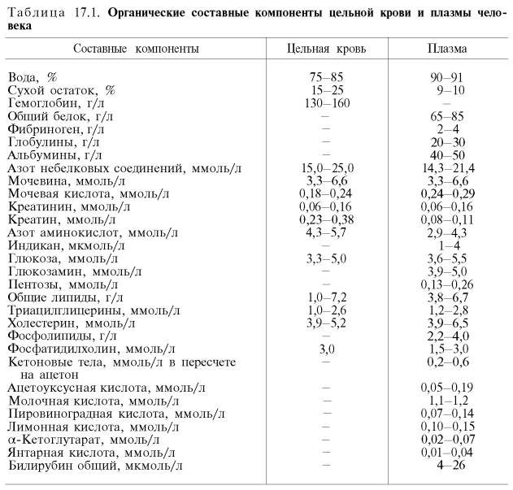
Из данных табл. видно, что в крови содержится множество различных органических компонентов. Большую часть сухого остатка крови составляют белки.
Белки плазмы крови
Из 9–10% сухого остатка плазмы крови на долю белков приходится 6,5–8,5%. Используя метод высаливания нейтральными солями, белки плазмы крови можно разделить на три группы: альбумины, глобулины и фибриноген. Нормальное содержание альбуминов в плазме крови составляет 40–50 г/л, глобулинов – 20–30 г/л, фибриногена – 2,4 г/л. Плазма крови, лишенная фибриногена, называется сывороткой.
Синтез белков плазмы крови осуществляется преимущественно в клетках печени и ретикулоэндотелиальной системы. Физиологическая роль белков плазмы крови многогранна.
1. Белки поддерживают коллоидно-осмотическое (онкотическое) давление и тем самым постоянный объем крови. Содержание белков в плазме значительно выше, чем в тканевой жидкости. Белки, являясь коллоидами, связывают воду и задерживают ее, не позволяя выходить из кровяного русла. Несмотря на то что онкотическое давление составляет лишь небольшую часть (около 0,5%) от общего осмотического давления, именно оно обусловливает преобладание осмотического давления крови над осмотическим давлением тканевой жидкости. Известно, что в артериальной части капилляров в результате гидростатического давления безбелковая жидкость крови проникает в тканевое пространство. Это происходит до определенного момента – «поворотного», когда падающее гидростатическое давление становится равным коллоидно-осмотическому. После «поворотного» момента в венозной части капилляров происходит обратный ток жидкости из ткани, так как гидростатическое давление стало меньше, чем коллоидно-осмотическое. При иных условиях в результате гидростатического давления в кровеносной системе вода просачивалась бы в ткани, что вызвало бы отек различных органов и подкожной клетчатки.
2. Белки плазмы принимают активное участие в свертывании крови. Ряд белков, в том числе фибриноген, являются основными компонентами системы свертывания крови.
3. Белки плазмы в известной мере определяют вязкость крови, которая, как отмечалось, в 4–5 раз выше вязкости воды и играет важную роль в поддержании гемодинамических отношений в кровеносной системе.
4. Белки плазмы принимают участие в поддержании постоянного рН крови, так как составляют одну из важнейших буферных систем крови.
5. Важна также транспортная функция белков плазмы крови: соединяясь с рядом веществ (холестерин, билирубин и др.), а также с лекарственными средствами (пенициллин, салицилаты и др.), они переносят их к тканям.
6. Белки плазмы играют важную роль в процессах иммунитета (особенно это касается иммуноглобулинов).
7. В результате образования с белками плазмы недиализируемых комплексов поддерживается уровень катионов в крови. Например, 40–50% кальция сыворотки связано с белками, значительная часть железа, магния, меди и других элементов также связана с белками сыворотки.
8. Наконец, белки плазмы крови могут служить резервом аминокислот. Современные физико-химические методы позволили открыть и описать около 100 различных белковых компонентов плазмы крови. Особое значение приобрело электрофоретическое разделение белков плазмы (сыворотки) крови.
В сыворотке крови здорового человека при электрофорезе на бумаге можно обнаружить 5 фракций: альбумины, α1-, α2-, β-, γ-глобулины. Методом электрофореза в агаровом геле в сыворотке крови выделяют 7– 8 фракций, а при электрофорезе в крахмальном или полиакриламидном геле – до 16–17 фракций. Следует помнить, что терминология белковых фракций, получаемых при различных видах электрофореза, еще окончательно не установилась. При изменении условий электрофореза, а также при электрофорезе в различных средах (например, в крахмальном или полиак-риламидном геле) скорость миграции и, следовательно, порядок белковых зон могут меняться.
Еще большее число белковых фракций (свыше 30) можно получить методом иммуноэлектрофореза (рис.). Этот метод представляет собой своеобразную комбинацию электрофоретического и иммунологического методов анализа белков. Иными словами, термин «иммуноэлектрофорез» подразумевает проведение электрофореза и реакции преципитации в одной среде, т.е. непосредственно на гелевом блоке. При данном методе с помощью серологической реакции преципитации достигается значительное повышение аналитической чувстительности электрофоретического метода.
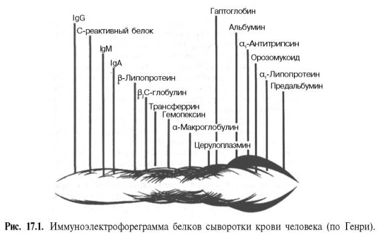
Характеристика основных белковых фракций
Альбумины. На долю альбуминов приходится более половины (55–60%) белков плазмы крови человека. Мол. масса альбумина около 70000. Сывороточные альбумины сравнительно быстро обновляются (период полураспада альбуминов человека 7 дней).
Благодаря высокой гидрофильности, особенно в связи с относительно небольшим размером молекул и значительной концентрацией в сыворотке, альбумины играют важную роль в поддержании онкотического давления крови. Известно, что концентрация альбуминов в сыворотке ниже 30 г/л вызывает значительные изменения онкотического давления крови, что приводит к возникновению отеков. Альбумины выполняют важную функцию транспорта многих биологически активных веществ (в частности, гормонов). Они способны связываться с холестерином, желчными пигментами. Значительная часть кальция в сыворотке крови также связана с альбуминами.
При электрофорезе в крахмальном геле фракция альбуминов у некоторых людей иногда делится на две (альбумин А и альбумин В), т.е. у таких людей имеется два независимых генетических локуса, контролирующих синтез альбуминов. Добавочная фракция (альбумин В) отличается от обычного сывороточного альбумина тем, что молекулы этого белка содержат два остатка дикарбоновых аминокислот или более, замещающих в полипептидной цепи обычного альбумина остатки тирозина или цистеина. Существуют и другие редкие варианты альбумина (альбумин Ридинг, альбумин Джент, альбумин Маки). Наследование полиморфизма альбуминов происходит по аутосомному кодоминантному типу и наблюдается в нескольких поколениях.
Помимо наследственного полиморфизма альбуминов, встречается преходящая бисальбуминемия, которую иногда принимают за врожденную. Описано появление быстрого компонента альбумина у больных, получавших большие дозы пенициллина. После отмены пенициллина этот компонент вскоре исчезал из крови. Существует предположение, что повышение электрофоретической подвижности фракции альбумин–антибиотик связано с увеличением отрицательного заряда за счет СООН-групп пенициллина.
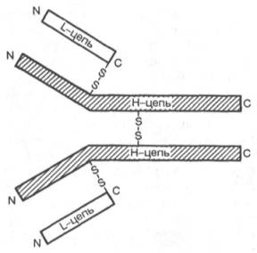
Глобулины. Сывороточные глобулины при высаливании нейтральными солями можно разделить на 2 фракции – эуглобулины и псевдоглобулины. Фракция эуглобулинов в основном состоит из γ-глобулинов, а фракция псевдоглобулинов включает α-, β- и γ-глобулины, которые при электрофорезе, особенно в крахмальном или полиакриламидном геле, способны разделяться на ряд подфракций. α- и β-Глобулиновые фракции содержат липопротеины, а также белки, связанные с металлами. Большая часть антител, содержащихся в сыворотке, находится во фракции γ-глобулинов. При снижении уровня белков этой фракции резко понижаются защитные силы организма.
Иммуноглобулины, или антитела , синтезируются В-лимфоцитами или образующимися из них плазматическими клетками. Известно 5 классов иммуноглобулинов: IgG, IgA, IgM, IgD и IgE, при этом IgG, IgA и IgM – основные классы; IgD и IgE – минорные классы иммуноглобулинов плазмы человека. Молекула иммуноглобулина состоит из двух идентичных пар полипептидных цепей. Каждая пара в свою очередь состоит из двух разных цепей: легкой (L) и тяжелой (Н). Иными словами, молекула иммуноглобулинов состоит из двух легких (L) цепей (мол. масса 23000) и двух тяжелых (Н) цепей (мол. масса 53000–75000), образующих тетрамер (L2H2) при помощи дисульфидных связей (рис. 17.2). Каждая цепь разделена (может быть, несколько условно) на специфические домены, или участки, имеющие определенное структурное и функциональное значение. Половину легкой цепи, включающую карбоксильный конец, называют константной областью (CL), a N-концевую половину легкой цепи – вариабельной областью (VL).
Примерно четвертую часть тяжелой цепи, включающую N-конец, относят к вариабельной области Н-цепи (VH), остальная часть ее – это константные области (СН1, СН2, СН3). Участок иммуноглобулина, связывающийся со специфическим антигеном, формируется N-концевыми вариабельными областями легких и тяжелых цепей, т.е. VH- и УL-доменами. У высших позвоночных имеются все 5 классов антител (IgA, IgD, IgE, IgG и IgM), каждый со своим классом Н-цепей: α, δ, ε, γ и μ соответственно. Молекулы IgA содержат α-цепи, молекулы IgG – γ-цепи и т.д. Кроме того, имеется ряд подклассов иммуноглобулинов IgG и IgA. Например, у человека существует 4 подкласса IgG: IgG1, IgG2, IgG3и IgG4, содержащих тяжелые цепи γ1, γ2, γ3и γ4соответственно. Разные Н-цепи придают шарнирным участкам и «хвостовым» областям антител различную конформацию и определяют характерные свойства каждого класса и подкласса (подробнее см. руководства по иммунологии).
В клинической практике встречаются состояния, характеризующиеся изменением как общего количества белков плазмы крови, так и процентного соотношения отдельных белковых фракций.
Гиперпротеинемия – увеличение общего содержания белков плазмы. Диарея у детей, рвота при непроходимости верхнего отдела тонкой кишки, обширные ожоги могут способствовать повышению концентрации белков в плазме крови. Иными словами, потеря воды организмом, а следовательно, и плазмой приводит к повышению концентрации белка в крови (относительная гиперпротеинемия).
При ряде патологических состояний может наблюдаться абсолютная гиперпротеинемия, обусловленная увеличением уровня γ-глобулинов: например, гиперпротеинемия в результате инфекционного или токсического раздражения системы макрофагов; гиперпротеинемия при миеломной болезни. В сыворотке крови больных миеломной болезнью обнаруживаются специфические «миеломные» белки. Появление в плазме крови белков, не существующих в нормальных условиях, принято называть парапротеине-мией. Нередко при этом заболевании содержание белков в плазме достигает 100–160 г/л.
Иногда при миеломной болезни аномальные белки плазмы преодолевают почечный барьер и появляются в моче. Эти белки, представляющие собой легкие цепи иммуноглобулинов, получили название белков Бенс-Джонса. Явления парапротеинемии можно наблюдать и при макроглобу-линемии Вальденстрема. Для болезни Вальденстрема характерно появление в плазме крови белков с большой молекулярной массой (1000000– 1600000); содержание макроглобулинов может достигать 80% от общего количества белка, составляющего в этом случае 150–160 г/л.
Гипопротеинемия, или уменьшение общего количества белка в плазме крови, наблюдается главным образом при снижении уровня альбуминов. Выраженная гипопротеинемия – постоянный и патогенетически важный симптом нефротического синдрома. Содержание общего белка снижается до 30–40 г/л. Гипопротеинемия наблюдается также при поражении печеночных клеток (острая атрофия печени, токсический гепатит и др.). Кроме того, гипопротеинемия может возникнуть при резко увеличенной проницаемости стенок капилляров, при белковой недостаточности (поражение пищеварительного тракта, карцинома и др.). Следовательно, можно считать, что гиперпротеинемия, как правило, связана с гиперглобулинемией, а гипопро-теинемия – с гипоальбуминемией.
При многих заболеваниях очень часто изменяется процентное соотношение отдельных белковых фракций, хотя общее содержание белка в сыворотке крови остается в пределах нормы. Такое состояние носит название «диспротеинемия». На рис. 17.3 схематично представлен характер изменения белковых фракций сыворотки крови при ряде заболеваний без учета формы и стадии болезни.
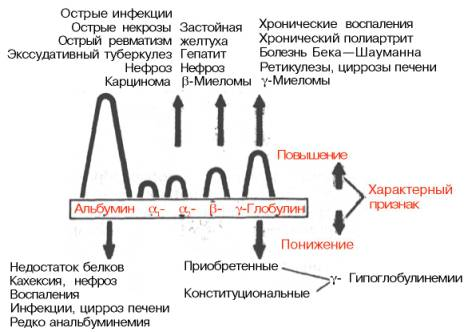
В течении многих болезней, связанных с общим воспалением (инфекционные заболевания, ревматизм и т.д.), отмечается несколько стадий, что, несомненно, сказывается и на белковом спектре крови.
Как отмечалось, α- и β-глобулиновые фракции белков сыворотки крови содержат липопротеины и гликопротеины. В состав углеводной части гликопротеинов крови входят в основном следующие моносахариды и их производные: галактоза, манноза, рамноза, глюкозамин, галактозамин, нейраминовая кислота и ее производные (сиаловые кислоты). Соотношение этих углеводных компонентов в отдельных гликопротеинах сыворотки крови различно. Чаще всего в осуществлении связи между белковой и углеводной частями молекулы гликопротеинов принимают участие аспа-рагиновая кислота (ее карбоксил) и глюкозамин. Несколько реже встречается связь между гидроксилом треонина или серина и гексозаминами или гексозами.
Нейраминовая кислота и ее производные (сиаловые кислоты) – наиболее лабильные и активные компоненты гликопротеинов. Они занимают конечное положение в углеводной цепочке молекулы гликопротеинов и во многом определяют свойства данного гликопротеина.
Гликопротеины имеются почти во всех белковых фракциях сыворотки крови. При электрофорезе на бумаге гликопротеины в большом количестве выявляются в α1- и α2-фракциях глобулинов. Гликопротеины, связанные с α-глобулиновыми фракциями, содержат небольшое количество фруктозы, а гликопротеины, выявляемые в составе β- и особенно γ-глобулиновых фракций, содержат фруктозу в значительном количестве.
Повышенное содержание гликопротеинов в плазме или сыворотке крови наблюдается при туберкулезе, плевритах, пневмониях, остром ревматизме, гломерулонефритах, нефротическом синдроме, диабете, инфаркте миокарда, подагре, а также при остром и хроническом лейкозах, миеломе, лимфосаркоме и некоторых других болезнях. У больного ревматизмом увеличение содержания гликопротеинов в сыворотке соответствует тяжести заболевания. Это объясняется, по мнению ряда исследователей, деполимеризацией основного вещества соединительной ткани, что приводит к поступлению гликопротеинов в кровь.
Липопротеины плазмы крови
Липопротеины – это высокомолекулярные водорастворимые частицы, представляющие собой комплекс белков и липидов. В этом комплексе белки вместе с полярными липидами формируют поверхностный гидрофильный слой, окружающий и защищающий внутреннюю гидрофобную липидную сферу от водной среды и обеспечивающий транспорт липидов в кровяном русле и их доставку в органы и ткани.
Плазменные липопротеины (ЛП) – это сложные комплексные соединения, имеющие характерное строение: внутри липопротеиновой частицы находится жировая капля (ядро), содержащая неполярные липиды (три-глицериды, эстерифицированный холестерин); жировая капля окружена оболочкой, в состав которой входят фосфолипиды, белок и свободный холестерин. Толщина наружной оболочки липопротеиновой частицы (ЛП-частица) составляет 2,1–2,2 нм, что соответствует половине толщины ли-пидного бислоя клеточных мембран. Это позволило сделать заключение, что в плазменных липопротеинах наружная оболочка в отличие от клеточных мембран содержит липидный монослой. Фосфолипиды, а также неэсте-рифицированный холестерин (НЭХС) расположены в наружной оболочке таким образом, что полярные группы фиксированы наружу, а гидрофобные жирно-кислотные «хвосты» – внутрь частицы, причем какая-то часть этих «хвостов» даже погружена в липидное ядро. По всей вероятности, наружная оболочка липопротеинов представляет собой не гомогенный слой, а мозаичную поверхность с выступающими участками белка. Существует много различных схем строения ЛП-частицы. Предполагают, что входящие в ее состав белки занимают только часть наружной оболочки. Допускается, что часть белковой молекулы погружена в ЛП-частицу глубже, чем толщина ее наружной оболочки (рис. 17.4). Итак, плазменные ЛП представляют собой сложные надмолекулярные комплексы, в которых химические связи между компонентами комплекса носят нековалентный характер. Поэтому применительно к ним вместо слова «молекула» употребляют выражение «частица».
Классификация липопротеинов. Существует несколько классификаций ЛП, основанных на различиях в их свойствах: гидратированной плотности, скорости флотации, электрофоретической подвижности, а также на различиях в апопротеиновом составе частиц.
Наибольшее распространение получила классификация, основанная на поведении отдельных ЛП в гравитационном поле в процессе ультрацентрифугирования. Применяя набор солевых плотностей, можно изолировать отдельные фракции ЛП: хиломикроны (ХМ) – самые легкие частицы, затем липопротеины очень низкой плотности (ЛПОНП), липопротеины низкой плотности (ЛПНП) и липопротеины высокой плотности (ЛПВП).
Различная электрофоретическая подвижность по отношению к глобулинам плазмы крови положена в основу другой классификации ЛП, согласно которой различают ХМ (остаются на старте подобно γ-глобулинам), β-ЛП, пре-β-ЛП и α-ЛП, занимающие положение β-, α1- и α2-глобулинов соответственно. Электрофоретическая подвижность фракций ЛП, выделенных путем ультрацентрифугирования, соответствует подвижности отдельных глобулинов, поэтому иногда используют двойное их обозначение: ЛПОНП и пре-β-ЛП, ЛПНП и β-ЛП, ЛПВП и α-ЛП (рис. 17.5). Следует помнить, что изолированные различными методами ЛП не являются полностью идентичными, поэтому рекомендуется использовать терминологию, соответствующую методу выделения.
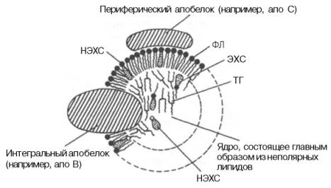
Рис.Строение ЛП-частицы (схема). Имеется сходство со структурой плазматической мембраны. Некоторое количество эстерифицированного холестерина и триглицеридов (не показано) содержится в поверхностном слое, а в ядре частицы -небольшое количество неэстерифицированного холестерина (по А.Н. Климову и Н.Г. Никульчевой). Объяснение в тексте.
Аполипопротеины (апобелки, апо) входят в состав липопротеинов. Это один белок либо несколько белков, или полипептидов, которые называют апобелками (сокращенно апо). Эти белки обозначают буквами латинского алфавита (А, В, С). Так, два главных апобелка ЛПВП обозначаются A-I и А-II. Основным апобелком ЛПНП является апобелок В, он входит также в состав ЛПОНП и хиломикронов. Апобелки C-I, С-II и C-III представляют собой небольшие полипептиды, которые могут свободно переходить от одного липопротеина к другому. Помимо апобелков А, В и С, в липопро-теинах плазмы крови идентифицировано еще несколько апобелков. Одним из них является выделенный из ЛПОНП апобелок Е, на его долю приходится 5–10% от общего количества апобелков ЛПОНП.
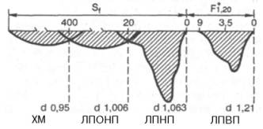
Рис. Шлирен-профиль липопротеинов плазмы крови человека при аналитическом ультрацентрифугировании (по А.Н. Климову и Н.Г. Никульчевой, 1995).
Апобелки выполняют не только структурную функцию, но и обеспечивают активное участие комплексов ЛП в транспорте липидов в токе крови от мест их синтеза к клеткам периферических тканей, а также обратный транспорт холестерина в печень для дальнейших метаболических превращений. Апобелки выполняют функцию лигандов во взаимодействии ЛП со специфическими рецепторами на клеточных мембранах, регулируя тем самым гомеостаз холестерина в клетках и в организме в целом. Не меньшее значение имеет также регуляция апобелками активности ряда основных ферментов липидного обмена: лецитин-холестеролацилтрансферазы, липопротеинлипазы, печеночной триглицеридлипазы. Структура и концентрация в плазме крови каждого апобелка находится под генетическим контролем, в то время как содержание липидов в большей степени подвержено влиянию диетических и других факторов.
Дислипопротеинемией (ДЛП) называют изменения в содержании липо-протеинов в плазме (сыворотке) крови: повышение, снижение или практически полное отсутствие. Сюда же относят случаи появления в крови необычных или патологических ЛП. Таким образом, понятие «дислипопро-теинемия» охватывает все разновидности изменения уровня ЛП в крови. Более узким является термин «гиперлипопротеинемия» (ГЛП), отражающий увеличение какого-то класса или классов ЛП в крови. Первой и весьма успешной попыткой систематизации отклонений от нормы в липопротеид-ном спектре крови явилась классификация типов ГЛП, разработанная D. Fredrickson и соавт. и одобренная экспертами ВОЗ. Согласно варианту ВОЗ, различают следующие типы ГЛП.
Тип I – гиперхиломикронемия. Основные изменения в липопротеи-нограмме следующие: высокое содержание ХМ, нормальное или слегка повышенное содержание ЛПОНП; резко повышенный уровень триглицери-дов в сыворотке крови. Клинически это состояние проявляется ксантома-тозом.
Тип II делят на два подтипа: тип IIа – гипер-β-липопротеинемия с характерным высоким содержанием в крови ЛПНП и тип IIб – гипер-β-липо-протеинемия с высоким содержанием одновременно двух классов липопро-теинов (ЛПНП, ЛПОНП). При типе II отмечается высокое, а в некоторых случаях очень высокое содержание холестерина в плазме крови. Уровень триглицеридов в крови может быть либо нормальным (типа IIа), либо повышенным (тип IIб). Клинически проявляется атеросклеротическими нарушениями, нередко развивается ишемическая болезнь сердца (ИБС).
Тип III – дис-β-липопротеинемия. В сыворотке крови появляются липопротеины с необычно высоким содержанием холестерина и высокой электрофоретической подвижностью («флотирующие» β-липопротеины). Они накапливаются в крови вследствие нарушения превращения ЛПОНП в ЛПНП. Этот тип ГЛП часто сочетается с различными проявлениями атеросклероза, в том числе с ИБС и поражением сосудов ног.
Тип IV – гиперпре-β-липопротеинемия. Характерны повышение уровня ЛПОНП, нормальное содержание ЛПНП, отсутствие ХМ; увеличение уровня триглицеридов при нормальном или слегка повышенном уровне холестерина. Клинически этот тип сочетается с диабетом, ожирением, ИБС.
Тип V – гиперпре-β-липопротеинемия и гиперхиломикронемия. Наблюдаются повышение уровня ЛПОНП, наличие ХМ. Клинически проявляется ксантоматозом, иногда сочетается со скрытым диабетом. Ишемической болезни сердца при данном типе ГЛП не наблюдается.
Несомненным достоинством данной классификации является то, что она выделила связь нарушений обмена ЛП с развитием атеросклероза, благодаря чему не утратила своего значения и в настоящее время. Однако эта классификация не охватывает все возможные варианты отклонений от нормы в содержании липидов и ЛП в плазме крови. В частности, она не учитывает изменения концентрации ЛПВП, пониженное содержание которых является независимым фактором риска развития атеросклероза и ИБС, а повышенное, наоборот, выполняет роль антириск-фактора.
Исследования, проведенные во многих странах мира, показали, что у больных ИБС содержание α-липопротеинового холестерина ниже, чем у лиц без признаков ИБС. Холестерин ЛПВП как «предсказатель» ИБС оказался в 8 раз чувствительнее, чем холестерин ЛПНП. Предложено в качестве «предсказателя» рассчитывать так называемый холестериновый коэффициент атерогенности (К), представляющий собой отношение уровня холестерина ЛПНП и ЛПОНП к содержанию холестерина ЛПВП:
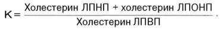
В клинике очень удобно рассчитывать этот коэффициент на основании определения уровня общего холестерина и холестерина ЛПВП:
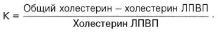
Чем выше этот коэффициент (у здоровых лиц он не превышает 3), тем выше опасность развития (и наличия) ИБС.
Отдельные наиболее изученные и интересные в клиническом отношении белки плазмы
Гаптоглобин входит в состав глобулиновой фракции. Этот белок обладает способностью соединяться с гемоглобином. Образовавшийся гаптоглобин– гемоглобиновый комплекс может поглощаться системой макрофагов, при этом предупреждается потеря железа, входящего в состав гемоглобина как при физиологическом, так и при патологическом его освобождении из эритроцитов. Методом электрофореза выявлены 3 группы гаптоглобинов: Нр 1–1, Нр 2–1 и Нр 2–2. Установлено, что имеется связь между наследованием типов гаптоглобинов и резус-антителами.
Ингибиторы трипсина обнаруживаются при электрофорезе белков плазмы крови в зоне α1- и α2-глобулинов; они способны ингибировать трипсин и другие протеолитические ферменты. В норме содержание этих белков составляет 2,0–2,5 г/л, но при воспалительных процессах в организме, беременности и ряде других состояний содержание белков-ингибиторов протеолитических ферментов увеличивается.
Трансферрин относится к β-глобулинам и обладает способностью соединяться с железом. Комплекс трансферрина с железом окрашен в оранжевый цвет. В этом комплексе железо находится в трехвалентной форме. Концентрация трансферрина в сыворотке крови составляет около 200–400 мг% (23–45 мкмоль/л). В норме только 1/3 трансферрина насыщена железом. Следовательно, имеется определенный резерв трансферрина, способного связывать железо. Трансферрин у различных людей может принадлежать к разным типам. Выявлено 19 типов трансферринов, различающихся по величине заряда белковой молекулы, ее аминокислотному составу и числу молекул сиаловых кислот, связанных с белком. Обнаружение разных типов трансферринов связывают с наследственными особенностями.
Церулоплазмин имеет голубоватый цвет, обусловленный наличием в его составе 0,32% меди; обладает слабой каталитической активностью, окисляя аскорбиновую кислоту, адреналин, диоксифенилаланин и некоторые другие соединения. Концентрация церулоплазмина в сыворотке крови в норме 25–43 мг% (1,7–2,9 мкмоль/л). При гепатоцеребральной дистрофии (болезнь Вильсона–Коновалова) содержание церулоплазмина в сыворотке крови значительно снижено, а концентрация меди в моче высокая. Снижение уровня церулоплазмина отмечается также при мальабсорбции, нефрозе, дефиците меди, возникающем при парентеральном питании.
Содержание церулоплазмина повышено при беременности, гипертирео-зе, инфекции, апластической анемии, остром лейкозе, лимфогранулематозе, циррозе печени.
Электрофоретическими методами установлено наличие 4 изоферментов церулоплазмина. В норме в сыворотке крови взрослых людей обнаруживается 2 изофермента, которые заметно различаются по своей подвижности при электрофорезе в ацетатном буфере при рН 5,5. В сыворотке новорожденных также были выявлены 2 фракции, имеющие большую электрофоре-тическую подвижность, чем изоферменты церулоплазмина взрослого человека. Следует отметить, что по своей электрофоретической подвижности изоферментный спектр церулоплазмина в сыворотке крови при болезни Вильсона–Коновалова сходен с изоферментным спектром новорожденных.
С-реактивный белок получил свое название в результате способности вступать в реакцию преципитации с С-полисахаридом пневмококков. В сыворотке крови здорового организма С-реактивный белок отсутствует, но обнаруживается при многих патологических состояниях, сопровождающихся воспалением и некрозом тканей.
Появляется С-реактивный белок в острый период болезни, поэтому его иногда называют белком «острой фазы». С переходом в хроническую фазу заболевания С-реактивный белок исчезает из крови и снова появляется при обострении процесса. При электрофорезе белок перемещается вместе с α2-глобулинами.
Криоглобулин в сыворотке крови здоровых людей также отсутствует и появляется в ней при патологических состояниях. Отличительное свойство этого белка – способность выпадать в осадок или желатинизироваться при температуре ниже 37°С. При электрофорезе Криоглобулин чаще всего передвигается вместе с γ-глобулинами. Криоглобулин можно обнаружить в сыворотке крови при миеломе, нефрозе, циррозе печени, ревматизме, лимфосаркоме, лейкозах и других заболеваниях.
В настоящее время установлено, что один из криоглобулинов идентичен белку фибронектину, связанному с поверхностью фибробластов. Последний был выделен как в мономерной (мол. масса 220000), так и в димерной формах. Данный белок широко распространен в соединительной ткани.
Интерферон – специфический белок, синтезируемый в клетках организма в ответ на воздействие вирусов. Этот белок обладает способностью угнетать размножение вирусов в клетках, но не разрушает уже имеющиеся вирусные частицы. Образовавшийся в клетках интерферон легко выходит в кровяное русло и оттуда проникает в ткани и клетки. Интерферон обладает специфичностью, хотя и не абсолютной. Например, интерферон обезьян угнетает размножение вируса в культуре клеток человека. Защитное действие интерферона в значительной степени зависит от соотношения между скоростями распространения вируса и интерферона в крови и тканях.
Ферменты плазмы (сыворотки) крови
Ферменты, которые обнаруживаются в норме в плазме или сыворотке крови, условно можно разделить на 3 группы: секреторные, индикаторные и экскреторные. Секреторные ферменты, синтезируясь в печени, в норме выделяются в плазму крови, где играют определенную физиологическую роль. Типичными представителями данной группы являются ферменты, участвующие в процессе свертывания крови, и сывороточная холинэстераза. Индикаторные (клеточные) ферменты попадают в кровь из тканей, где они выполняют определенные внутриклеточные функции. Один из них находится главным образом в цитозоле клетки (ЛДГ, альдолаза), другие – в митохондриях (глутаматдегидрогеназа), третьи – в лизосомах (β-глюкуронидаза, кислая фосфатаза) и т.д. Большая часть индикаторных ферментов в сыворотке крови определяется в норме лишь в следовых количествах. При поражении тех или иных тканей ферменты из клеток «вымываются» в кровь; их активность в сыворотке резко возрастает, являясь индикатором степени и глубины повреждения этих тканей.
Экскреторные ферменты синтезируются главным образом в печени (лейцинаминопептидаза, щелочная фосфатаза и др.). В физиологических условиях эти ферменты в основном выделяются с желчью. Еще не полностью выяснены механизмы, регулирующие поступление данных ферментов в желчные капилляры. При многих патологических процессах выделение экскреторных ферментов с желчью нарушается, а активность в плазме крови повышается.
Особый интерес для клиники представляет исследование активности индикаторных ферментов в сыворотке крови, так как по появлению в плазме или сыворотке крови ряда тканевых ферментов в повышенных количествах можно судить о функциональном состоянии и поражении различных органов (например, печени, сердечной и скелетной мускулатуры). При остром инфаркте миокарда особенно важно исследовать активность креатинкиназы, АсАТ, ЛДГ и оксибутиратдегидрогеназы.
При заболеваниях печени, в частности при вирусном гепатите (болезнь Боткина), в сыворотке крови значительно увеличивается активность АлАТ и АсАТ, сорбитолдегидрогеназы, глутаматдегидрогеназы и некоторых других ферментов. Большинство ферментов, содержащихся в печени, присутствуют и в других органах тканей. Однако известны ферменты, которые более или менее специфичны для печеночной ткани. К таким ферментам, в частности, относится γ-глутамилтранспептидаза, или γ-глутамилтрансфе-раза (ГГТ). Данный фермент – высокочувствительный индикатор при заболеваниях печени. Повышение активности ГГТ отмечается при остром инфекционном или токсическом гепатите, циррозе печени, внутрипеченоч-ной или внепеченочной закупорке желчных путей, первичном или метастатическом опухолевом поражении печени, алкогольном поражении печени. Иногда повышение активности ГГТ наблюдается при застойной сердечной недостаточности, редко – после инфаркта миокарда, при панкреатитах, опухолях поджелудочной железы.
Органоспецифическими ферментами для печени считаются также гистида-за, сорбитолдегидрогеназа, аргиназа и орнитинкарбамоилтрансфераза. Изменение активности этих ферментов в сыворотке крови свидетельствует о поражении печеночной ткани.
В настоящее время особо важным лабораторным тестом стало исследование активности изоферментов в сыворотке крови, в частности изофермен-тов ЛДГ. Известно, что в сердечной мышце наибольшей активностью обладают изоферменты ЛДГ1 и ЛДГ2, а в ткани печени – ЛДГ4 и ЛДГ5 (см. главу 10). Установлено, что у больных с острым инфарктом миокарда в сыворотке крови резко повышается активность изоферментов ЛДГ1 и отчасти ЛДГ2. Изоферментный спектр ЛДГ в сыворотке крови при инфаркте миокарда напоминает изоферментный спектр сердечной мышцы. Напротив, при паренхиматозном гепатите в сыворотке крови значительно возрастает активность изоферментов ЛДГ4 и ЛДГ5 и уменьшается активность ЛДГ1 и ЛДГ2.
Диагностическое значение имеет также исследование активности изофер-ментов креатинкиназы в сыворотке крови. Существуют по крайней мере 3 изофермента креатинкиназы: ВВ, ММ и MB. В мозговой ткани в основном присутствует изофермент ВВ (от англ. brain – мозг), в скелетной мускулатуре – ММ-форма (от англ. muscle – мышца). Сердце содержит гибридную МВ-форму, а также ММ-форму. Изоферменты креатинкиназы особенно важно исследовать при остром инфаркте миокарда, так как МВ-форма в значительном количестве содержится практически только в сердечной мышце. Повышение активности МВ-формы в сыворотке крови свидетельствует о поражении именно сердечной мышцы.
Возрастание активности ферментов сыворотки крови при многих патологических процессах объясняется прежде всего двумя причинами: 1) выходом в кровяное русло ферментов из поврежденных участков органов или тканей на фоне продолжающегося их биосинтеза в поврежденных тканях; 2) одновременным повышением каталитической активности некоторых ферментов, переходящих в кровь. Возможно, что повышение активности ферментов при «поломке» механизмов внутриклеточной регуляции обмена веществ связано с прекращением действия соответствующих регуляторов и ингибиторов ферментов, изменением под влиянием различных факторов строения и структуры макромолекул ферментов.
Небелковые азотистые компоненты крови
Содержание небелкового азота в цельной крови и плазме почти одинаково и составляет в крови 15–25 ммоль/л. Небелковый азот крови включает азот мочевины (50% от общего количества небелкового азота), аминокислот (25%), эрготионеина (8%), мочевой кислоты (4%), креатина (5%), креати-нина (2,5%), аммиака и индикана (0,5%) и других небелковых веществ, содержащих азот (полипептиды, нуклеотиды, нуклеозиды, глутатион, билирубин, холин, гистамин и др.). Таким образом, в состав небелкового азота входит главным образом азот конечных продуктов обмена простых и сложных белков.
Небелковый азот крови называют также остаточным азотом, т.е. остающимся в фильтрате после осаждения белков. У здорового человека колебания в содержании небелкового (остаточного) азота крови незначительны и в основном зависят от количества поступающих с пищей белков. При ряде патологических состояний уровень небелкового азота в крови повышается. Это состояние носит название азотемии. Азотемия в зависимости от вызывающих ее причин подразделяется на ретенционную и продукционную. Ретенционная азотемия развивается в результате недостаточного выделения с мочой азотсодержащих продуктов при нормальном поступлении их в кровяное русло. Она в свою очередь может быть почечной и внепочечной.
При почечной ретенционной азотемии концентрация остаточного азота в крови увеличивается вследствие ослабления очистительной (экскреторной) функции почек. Резкое повышение содержания остаточного азота происходит в основном за счет мочевины. В этих случаях на долю азота мочевины приходится 90% небелкового азота крови вместо 50% в норме. Внепочечная ретенционная азотемия может возникнуть в результате тяжелой недостаточности кровообращения, снижения артериального давления и уменьшения почечного кровотока. Нередко внепочечная ретенционная азотемия является результатом наличия препятствия оттоку мочи после ее образования в почке.
Продукционная азотемия развивается при избыточном поступлении азотсодержащих продуктов в кровь, как следствие усиленного распада тканевых белков при обширных воспалениях, ранениях, ожогах, кахексии и др. Нередко наблюдаются азотемии смешанного типа.
Как отмечалось, в количественном отношении главным конечным продуктом обмена белков в организме является мочевина. Принято считать, что мочевина в 18 раз менее токсична, чем остальные азотистые вещества. При острой почечной недостаточности концентрация мочевины в крови достигает 50–83 ммоль/л (норма 3,3–6,6 ммоль/л). Нарастание содержания мочевины в крови до 16–20 ммоль/л (в расчете на азот мочевины) является признаком нарушения функции почек средней тяжести, до 35 ммоль/л – тяжелым и свыше 50 ммоль/л – очень тяжелым нарушением с неблагоприятным прогнозом. Иногда определяют отношение азота мочевины крови к остаточному азоту крови (в процентах):
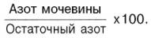
В норме это соотношение меньше 48%. При почечной недостаточности оно повышается и может достигать 90%, а при нарушении мочевинообразо-вательной функции печени снижается (ниже 45%).
К важным небелковым азотистым веществам крови относится также мочевая кислота. Напомним, что у человека мочевая кислота является конечным продуктом обмена пуриновых оснований. В норме концентрация мочевой кислоты в цельной крови составляет 0,18–0,24 ммоль/л (в сыворотке крови – около 0,29 ммоль/л). Повышение содержания мочевой кислоты в крови (гиперурикемия) – главный симптом подагры. При подагре уровень мочевой кислоты в сыворотке крови возрастает до 0,5–0,9 ммоль/л и даже до 1,1 ммоль/л.
В состав остаточного азота входит также азот аминокислот и полипептидов. В крови постоянно содержится некоторое количество свободных аминокислот. Часть из них экзогенного происхождения, т.е. попадает в кровь из пищеварительного тракта, другая часть аминокислот образуется в результате распада белков ткани. Почти пятую часть содержащихся в плазме аминокислот составляют глутаминовая кислота и глутамин (табл. 17.2). Содержание свободных аминокислот в сыворотке и плазме крови практически одинаково, но отличается от уровня их в эритроцитах. В норме отношение концентрации азота аминокислот в эритроцитах к содержанию азота аминокислот в плазме колеблется от 1,52 до 1,82. Это отношение отличается большим постоянством, и только при некоторых заболеваниях наблюдается его отклонение от нормы.
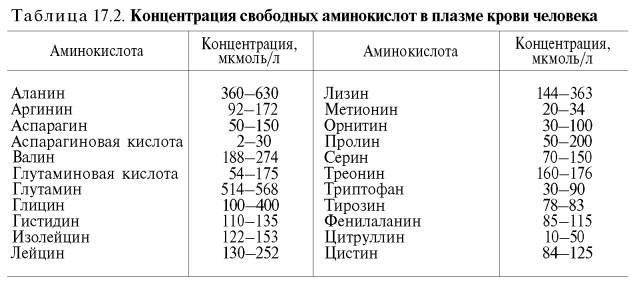
Суммарное определение уровня пептидов в крови производят сравнительно редко. Следует помнить, что многие пептиды крови являются биологически активными соединениями и их определение представляет большой клинический интерес. К таким соединениям относятся кинины.
Безазотистые органические компоненты крови
В группу безазотистых органических веществ крови входят углеводы, жиры, липиды, органические кислоты и некоторые другие вещества. Все эти соединения являются либо продуктами промежуточного обмена углеводов и жиров, либо играют роль питательных веществ. Основные данные, характеризующие содержание в крови различных безазотистых органических веществ, представлены в табл. В клинике большое значение придают количественному определению этих компонентов крови.
Электролитный состав плазмы крови
Известно, что общее содержание воды в организме человека составляет 60–65% от массы тела, т.е. приблизительно 40–45 л (если масса тела 70 кг); 2/3 общего количества воды приходится на внутриклеточную жидкость, 1/3 – нa внеклеточную. Часть внеклеточной воды находится в сосудистом русле (5% от массы тела), большая часть – вне сосудистого русла – это межуточная (интерстициальная), или тканевая, жидкость (15% от массы тела). Кроме того, различают «свободную воду», составляющую основу внутри- и внеклеточной жидкости, и воду, связанную с различными соединениями («связанная вода»).
Распределение электролитов в жидких средах организма очень специфично по своему количественному и качественному составу.
Из катионов плазмы натрий занимает ведущее место и составляет 93% от всего их количества. Среди анионов следует выделить прежде всего хлор и бикарбонат. Сумма анионов и катионов практически одинакова, т.е. вся система электронейтральна.
Натрий. Это основной осмотически активный ион внеклеточного пространства. В плазме крови концентрация ионов Na+приблизительно в 8 раз выше (132–150 ммоль/л), чем в эритроцитах.
При гипернатриемии, как правило, развивается синдром, обусловленный гипергидратацией организма. Накопление натрия в плазме крови наблюдается при особом заболевании почек, так называемом паренхиматозном нефрите, у больных с врожденной сердечной недостаточностью, при первичном и вторичном гиперальдостеронизме.
Гипонатриемия сопровождается дегидратацией организма. Коррекция натриевого обмена достигается введением растворов хлорида натрия с расчетом дефицита его во внеклеточном пространстве и клетке.
Калий. Концентрация ионов К+ в плазме колеблется от 3,8 до 5.4 ммоль/л; в эритроцитах его приблизительно в 20 раз больше. Уровень калия в клетках значительно выше, чем во внеклеточном пространстве, поэтому при заболеваниях, сопровождающихся усиленным клеточным распадом или гемолизом, содержание калия в сыворотке крови увеличивается.
Гиперкалиемия наблюдается при острой почечной недостаточности и гипофункции коркового вещества надпочечников. Недостаток альдостерона приводит к усилению выделения с мочой натрия и воды и задержке в организме калия.
При усиленной продукции альдостерона корковым веществом надпочечников возникает гипокалиемия, при этом увеличивается выделение калия с мочой, которое сочетается с задержкой натрия в тканях. Развивающаяся гипокалиемия вызывает тяжелые нарушения в работе сердца, о чем свидетельствуют данные ЭКГ. Понижение содержания калия в сыворотке отмечается иногда при введении больших доз гормонов коркового вещества надпочечников с лечебной целью.
Кальций. В эритроцитах обнаруживаются следы кальция, в то время как в плазме содержание его составляет 2,25–2,80 ммоль/л.
Различают несколько фракций кальция: ионизированный кальций, кальций неионизированный, но способный к диализу, и недиализирующийся (недиффундирующий), связанный с белками кальций.
Кальций принимает активное участие в процессах нервно-мышечной возбудимости (как антагонист ионов К+), мышечного сокращения, свертывания крови, образует структурную основу костного скелета, влияет на проницаемость клеточных мембран и т.д.
Отчетливое повышение уровня кальция в плазме крови наблюдается при развитии опухолей в костях, гиперплазии или аденоме паращитовидных желез. В таких случаях кальций поступает в плазму из костей, которые становятся ломкими.
Важное диагностическое значение имеет определение уровня кальция при гипокалъциемии. Состояние гипокальциемии наблюдается при гипо-паратиреозе. Нарушение функции паращитовидных желез приводит к резкому снижению содержания ионизированного кальция в крови, что может сопровождаться судорожными приступами (тетания). Понижение концентрации кальция в плазме отмечают также при рахите, спру, обтурационной желтухе, нефрозах и гломерулонефритах.
Магний. В организме магний локализуется в основном внутри клетки – 15 ммоль/ на 1 кг массы тела; концентрация магния в плазме 0,8–1.5 ммоль/л, в эритроцитах – 2,4–2,8 ммоль/л. Мышечная ткань содержит магния в 10 раз больше, чем плазма крови. Уровень магния в плазме даже при значительных его потерях длительное время может оставаться стабильным, пополняясь из мышечного депо.
Фосфор. В клинике при исследовании крови различают следующие фракции фосфора: общий фосфат, кислоторастворимый фосфат, липоидный фосфат и неорганический фосфат. Для клинических целей чаще определяют содержание неорганического фосфата в плазме (сыворотке) крови.
Уровень неорганического фосфата в плазме крови повышается при гипопаратиреозе, гипервитаминозе D, приеме тироксина, УФ-облучении организма, желтой дистрофии печени, миеломе, лейкозах и т.д.
Гипофосфатемия (снижение содержания фосфора в плазме) особенно характерна для рахита. Очень важно, что снижение уровня неорганического фосфата в плазме крови отмечается на ранних стадиях развития рахита, когда клинические симптомы недостаточно выражены. Гипофосфатемия наблюдается также при введении инсулина, гиперпаратиреозе, остеомаляции, спру и некоторых других заболеваниях.
Железо. В цельной крови железо содержится в основном в эритроцитах (около 18,5 ммоль/л), в плазме концентрация его составляет в среднем 0,02 ммоль/л. Ежедневно в процессе распада гемоглобина эритроцитов в селезенке и печени освобождается около 25 мг железа и столько же потребляется при синтезе гемоглобина в клетках кроветворных тканей. В костном мозге (основная эритропоэтическая ткань человека) имеется лабильный запас железа, превышающий в 5 раз суточную потребность в железе. Значительно больше запас железа в печени и селезенке (около 1000 мг, т.е. 40-суточный запас). Повышение содержания железа в плазме крови наблюдается при ослаблении синтеза гемоглобина или усиленном распаде эритроцитов.
При анемии различного происхождения потребность в железе и всасывание его в кишечнике резко возрастают. Известно, что в двенадцатиперстной кишке железо всасывается в форме двухвалентного железа. В клетках слизистой оболочки кишечника железо соединяется с белком апоферрити-ном и образуется ферритин. Предполагают, что количество поступающего из кишечника в кровь железа зависит от содержания апоферритина в стенках кишечника. Дальнейший транспорт железа из кишечника в кроветворные органы осуществляется в форме комплекса с белком плазмы крови трансферрином. Железо в этом комплексе трехвалентное. В костном мозге, печени и селезенке железо депонируется в форме ферритина – своеобразного резерва легкомобилизуемого железа. Кроме того, избыток железа может откладываться в тканях в виде хорошо известного морфологам метаболически инертного гемосидерина.
Недостаток железа в организме может вызвать нарушение последнего этапа синтеза гема – превращение протопорфирина IX в гем. Как результат этого развивается анемия, сопровождающаяся увеличением содержания порфиринов, в частности протопорфирина IX, в эритроцитах.
Микроэлементы. Обнаруживаемые в тканях, в том числе в крови, в очень небольших количествах (10–6–10–12%) минеральные вещества получили название микроэлементов. К ним относят йод, медь, цинк, кобальт, селен и др. Большинство микроэлементов в крови находится в связанном с белками состоянии. Так, медь плазмы входит в состав церрулоплазмина, цинк эритроцитов целиком связан с карбоангидразой (карбонат-дегидратаза), 65–70% йода крови находится в органически связанной форме – в виде тироксина. В крови тироксин содержится главным образом в связанной с белками форме. Он составляет комплекс преимущественно со специфическим связывающим его глобулином, который располагается при электрофорезе сывороточных белков между двумя фракциями α-глобулина. Поэтому тироксинсвязывающий белок носит название интеральфаглобулина.
Кобальт, обнаруживаемый в крови, также находится в белково-связанной форме и лишь частично как структурный компонент витамина В12. Значительная часть селена в крови входит в состав активного центра фермента глутатионпероксидазы, а также связана с другими белками.
Клетки крови
У человека в 1 мкл крови содержится 5•106 эритроцитов (красные кровяные клетки), которые образуются в костном мозге. Зрелые эритроциты человека и других млекопитающих лишены ядра и почти целиком заполнены гемоглобином. Средняя продолжительность жизни этих клеток 125 дней. Разрушаются эритроциты в селезенке и печени. Концентрация гемоглобина в крови зависит от общего количества эритроцитов и содержания в каждом из них гемоглобина. Поэтому выделяют гипо-, нормо- и гиперхром-ную анемию в зависимости от того, сопряжено ли падение уровня гемоглобина крови с уменьшением или увеличением его содержания в одном эритроците.
Большую часть гемоглобина взрослого человека составляет HbA1 (96– 98% от общего содержания гемоглобина), в небольшом количестве присутствуют НbА2 (2–3%), а также HbF (менее 1%), которого много в крови новорожденных. У некоторых людей в крови обнаруживаются генетически обусловленные аномальные гемоглобины (см. главу 2), всего описано более 100 типов таких гемоглобинов. Появление в крови аномальных типов гемоглобина нередко приводит к возникновению характерных анемий, которые получили название «гемоглобинопатии», или «гемоглобинозы». Следует заметить, что в эритроцитах интенсивно протекают гликолиз и пентозофосфатный путь.
Содержание лейкоцитов в 1 мкл крови составляет около 7•103, т.е. почти в 1000 раз меньше, чем эритроцитов. Лейкоциты в отличие от эритроцитов являются полноценными клетками с большим ядром и митохондриями и высоким содержанием нуклеиновых кислот. В них сосредоточен весь гликоген крови, который служит источником энергии при недостатке кислорода, например, в очагах воспаления.
Лейкоциты представлены клетками 3 типов: лимфоцитами (26% от общего числа лейкоцитов), моноцитами (7%) и полиморфно-ядерными лейкоцитами, или гранулоцитами (70%). При окрашивании различными красителями выявляются 3 типа гранулоцитов: нейтрофилы, эозинофилы и базофилы.
Лимфоциты продуцируются в лимфатической ткани, основная их функция – образование антител, в частности иммуноглобулинов. Моноциты вдвое крупнее лимфоцитов; они способны переваривать клетки бактерий. Гранулоциты образуются в красном костном мозге и выполняют различные функции: например, основная функция нейтрофилов – фагоцитоз.
Наконец, в крови имеются кровяные пластинки, или тромбоциты, которые образуются из цитоплазмы мегакариоцитов костного мозга. Тромбоциты не могут считаться полноценными клетками, поскольку не содержат ядра, однако в них протекают все основные биохимические процессы: синтезируется белок, происходит обмен углеводов и липидов, осуществляется биологическое окисление, сопряженное с фосфорилированием, и т.д. Основная физиологическая функция кровяных пластинок – участие в процессе свертывания крови.
БУФЕРНЫЕ СИСТЕМЫ КРОВИ И КИСЛОТНО-ОСНОВНОЕ РАВНОВЕСИЕ
Постоянство рН внутренней среды организма обусловлено совместным действием буферных систем и ряда физиологических механизмов. К последним относятся дыхательная деятельность легких и выделительная функция почек.
Кислотно-основное равновесие – относительное постоянство реакции внутренней среды организма, количественно характеризующееся или концентрацией водородных ионов (протонов), выраженной в молях на 1 л, или водородным показателем – отрицательным десятичным логарифмом этой концентрации – рН (power hydrogen – сила водорода).
«Первая линия защиты» живых организмов, препятствующая изменениям рН их внутренней среды, обеспечивается буферными системами крови.
Буферная система представляет собой сопряженную кислотно-основную пару, состоящую из акцептора и донора водородных ионов (протонов).
Поведение буферных растворов описывается уравнением Гендерсона– Хассельбаха, которое связывает значение рН с константой кислотности (Ка):
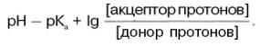
Уравнение Гендерсона–Хассельбаха позволяет вычислить величину рКа любой кислоты при данном рН (если известно отношение молярных концентраций донора и акцептора протонов), определить величину рН сопряженной кислотно-основной пары при данном молярном соотношении донора и акцептора протонов (если известна величина рКа) и рассчитать соотношение между молярными концентрациями донора и акцептора протонов при любом значении рН (если известна величина рКа слабой кислоты).
Буферные системы крови
Установлено, что состоянию нормы соответствует определенный диапазон колебаний рН крови – от 7,37 до 7,44 со средней величиной 7,40 . Кровь представляет собой взвесь клеток в жидкой среде, поэтому ее кислотно-основное равновесие поддерживается совместным участием буферных систем плазмы и клеток крови. Важнейшими буферными системами крови являются бикарбонатная, фосфатная, белковая и наиболее мощная гемогло-биновая.
Бикарбонатная буферная система – мощная и, пожалуй, самая управляемая система внеклеточной жидкости и крови. На долю бикарбонатного буфера приходится около 10% всей буферной емкости крови. Бикарбонатная система представляет собой сопряженную кислотно-основную пару, состоящую из молекулы угольной кислоты Н2СО3, выполняющую роль донора протона, и бикарбонат-иона НСО3–, выполняющего роль акцептора протона:
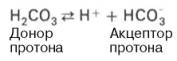
Для данной буферной системы величину рН в растворе можно выразить через константу диссоциации угольной кислоты (рКН2СО3) и логарифм концентрации недиссоциированных молекул Н2СО3 и ионов HCO3–:
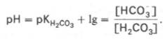
Истинная концентрация недиссоциированных молекул Н2СО3 в крови незначительна и находится в прямой зависимости от концентрации растворенного углекислого газа (СО2 + Н2О <=> Н2СО3). Поэтому удобнее пользоваться тем вариантом уравнения, в котором рКH2СО3 заменена «кажущейся» константой диссоциации Н2СО3, учитывающей общую концентрацию растворенного СО2 в крови:
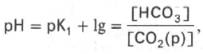
где K1– «кажущаяся» константа диссоциации Н2 С О3 ; [СО2(р)] – концентрация растворенного СО2.
При нормальном значении рН крови (7,4) концентрация ионов бикарбоната НСО3 в плазме крови превышает концентрацию СО2 примерно в 20 раз. Бикарбонатная буферная система функционирует как эффективный регулятор в области рН 7,4.
Механизм действия данной системы заключается в том, что при выделении в кровь относительно больших количеств кислых продуктов водородные ионы Н+ взаимодействуют с ионами бикарбоната НСО3–, что приводит к образованию слабодиссоциирующей угольной кислоты Н2СО3. Последующее снижение концентрации Н2СО3 достигается в результате ускоренного выделения СО2 через легкие в результате их гипервентиляции (напомним, что концентрация Н2СО3 в плазме крови определяется давлением СО2 в альвеолярной газовой смеси).
Если в крови увеличивается количество оснований, то они, взаимодействуя со слабой угольной кислотой, образуют ионы бикарбоната и воду. При этом не происходит сколько-нибудь заметных сдвигов в величине рН. Кроме того, для сохранения нормального соотношения между компонентами буферной системы в этом случае подключаются физиологические механизмы регуляции кислотно-основного равновесия: происходит задержка в плазме крови некоторого количества СО2 в результате гиповентиляции легких . Как будет показано далее, данная буферная система тесно связана с гемоглобиновой системой.
Фосфатная буферная система представляет собой сопряженную кислотно-основную пару, состоящую из иона Н2РО4– (донор протонов) и иона НРО42– (акцептор протонов):
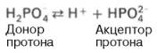
Роль кислоты в этой системе выполняет однозамещенный фосфат NaH2PO4, а роль соли двузамещенный фосфат – Na2HPO4.
Фосфатная буферная система составляет всего лишь 1% от буферной емкости крови. В других тканях эта система является одной из основных. Для фосфатной буферной системы справедливо следующее уравнение:
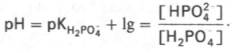
Во внеклеточной жидкости, в том числе в крови, соотношение [НРО42–]: [Н2РО4–] составляет 4:1. Величина рКН2РО4– равна 6,86.
Буферное действие фосфатной системы основано на возможности связывания водородных ионов ионами НРО42– с образованием Н2РО4– (Н+ + + НРО42– —> Н2РО4–), а также ионов ОН– с ионами Н2РО4– (ОН– + + Н2 Р О4– —> HPO42–+ H2O). Буферная пара (Н2РО4––НРО42–) способна оказывать влияние при изменениях рН в интервале от 6,1 до 7,7 и может обеспечивать определенную буферную емкость внутриклеточной жидкости, величина рН которой в пределах 6,9–7,4. В крови максимальная емкость фосфатного буфера проявляется вблизи значения рН 7,2. Фосфатный буфер в крови находится в тесном взаимодействии с бикарбонатной буферной системой. Органические фосфаты также обладают буферными свойствами, но мощность их слабее, чем неорганического фосфатного буфера.
Белковая буферная система имеет меньшее значение для поддержания КОР в плазме крови, чем другие буферные системы.
Белки образуют буферную систему благодаря наличию кислотно-основных групп в молекуле белков: белок–Н+ (кислота, донор протонов) и белок (сопряженное основание, акцептор протонов). Белковая буферная система плазмы крови эффективна в области значений рН 7,2–7,4.
Гемоглобиновая буферная система – самая мощная буферная система крови. Она в 9 раз мощнее бикарбонатного буфера; на ее долю приходится 75% от всей буферной емкости крови.
Участие гемоглобина в регуляции рН крови связано с его ролью в транспорте кислорода и углекислого газа. Константа диссоциации кислотных групп гемоглобина меняется в зависимости от его насыщения кислородом. При насыщении кислородом гемоглобин становится более сильной кислотой (ННbО2). Гемоглобин, отдавая кислород, превращается в очень слабую органическую кислоту (ННb).
Итак, гемоглобиновая буферная система состоит из неионизированного гемоглобина ННb (слабая органическая кислота, донор протонов) и калиевой соли гемоглобина КНb (сопряженное основание, акцептор протонов). Точно так же может быть рассмотрена оксигемоглобиновая буферная система. Система гемоглобина и система оксигемоглобина являются вза-имопревращающимися системами и существуют как единое целое. Буферные свойства гемоглобина прежде всего обусловлены возможностью взаимодействия кисло реагирующих соединений с калиевой солью гемоглобина с образованием эквивалентного количества соответствующей калийной соли кислоты и свободного гемоглобина:
КНb + Н2СO3—> КНСO3 + ННb.
Именно таким образом превращение калийной соли гемоглобина эритроцитов в свободный ННb с образованием эквивалентного количества бикарбоната обеспечивает поддержание рН крови в пределах физиологически допустимых величин, несмотря на поступление в венозную кровь огромного количества углекислого газа и других кисло реагирующих продуктов обмена.
Гемоглобин (ННb), попадая в капилляры легких, превращается в окси-гемоглобин (ННbО2), что приводит к некоторому подкислению крови, вытеснению части Н2СО3 из бикарбонатов и понижению щелочного резерва крови . Перечисленные буферные системы крови играют важную роль в регуляции кислотно-основного равновесия. Как отмечалось, в этом процессе, помимо буферных систем крови, активное участие принимают также система дыхания и мочевыделительная система.
Нарушения кислотно-основного равновесия
Если компенсаторные механизмы организма не способны предотвратить сдвиги концентрации водородных ионов, то нарушается кислотно-основное равновесие. При этом наблюдаются два противоположных состояния – ацидоз и алкалоз.
При ацидозе концентрация водородных ионов в крови выше нормальных величин. Естественно, при этом рН уменьшается. Снижение величины рН ниже 6,8 вызывает смерть.
В тех случаях, когда концентрация водородных ионов в крови уменьшается (соответственно значение рН возрастает), наступает состояние алкалоза. Предел совместимости с жизнью – рН 8,0. В клинике практически такие величины рН, как 6,8 и 8,0, не встречаются.
В зависимости от механизмов развития нарушений КОР выделяют дыхательный и метаболический ацидоз (или алкалоз).
Дыхательный ацидоз возникает в результате уменьшения минутного объема дыхания (например, при бронхиальной астме, отеке, эмфиземе, ателектазе легких, асфиксии механического порядка и т.д.). Все эти заболевания ведут к гиповентиляции и гиперкапнии, т.е. повышению РCO2 артериальной крови. Как следствие увеличивается содержание Н2СО3 в плазме крови. Увеличение РCO2 приводит также к повышению концентрации ионов НСО3– в плазме за счет гемоглобинового буферного механизма.
У больных с гиповентиляцией легких может довольно быстро развиться состояние, характеризующееся низким значением рН плазмы, повышением концентраций Н2СО3 и НСО3–. Это и есть дыхательный ацидоз. Одновременно со снижением рН крови повышается выведение с мочой свободных и связанных в форме аммонийных солей кислот.
Метаболический ацидоз – самая частая и тяжелая форма нарушений КОР. Он обусловлен накоплением в тканях и крови органических кислот. Этот вид ацидоза связан с нарушением обмена веществ. Метаболический ацидоз возможен при диабете, голодании, лихорадке, заболеваниях пищеварительного тракта, шоке (кардиогенном, травматическом, ожоговом и др.).
Особенно явно метаболический ацидоз проявляется у больных тяжелой формой диабета и не получающих инсулина. Увеличение кислотности обусловлено поступлением в кровь больших количеств кетоновых тел. В ответ на постоянную выработку кетоновых тел (β-оксимасляной и ацето-уксусной кислот) в организме компенсаторно снижается концентрация Н2СО3 – донора протонов в бикарбонатной буферной системе. Снижение концентрации Н2СО3 достигается в результате ускоренного выделения СО2 легкими (напомним, что Н2СО3 обратимо диссоциирует на СО2 и Н2О). Однако при тяжелом диабете для компенсации ацидоза легкие должны выделять настолько большие количества СО2, что концентрация Н2СО3 и НСО3– становится крайне низкой и буферная емкость крови значительно уменьшается. Все это приводит к неблагоприятным для организма последствиям. При метаболическом ацидозе кислотность мочи и концентрация аммиака в моче увеличены.
Дыхательный алкалоз возникает при резко усиленной вентиляции легких, сопровождающейся быстрым выделением из организма СО2 и развитием гипокапнии (понижение РCO2 в артериальной крови).
Данный вид алкалоза может наблюдаться, например, при вдыхании чистого кислорода, компенсаторной одышке, сопровождающей ряд заболеваний, пребывании в разреженной атмосфере и при других состояниях.
Вследствие понижения содержания угольной кислоты в артериальной крови происходит сдвиг в бикарбонатной буферной системе: часть бикарбонатов превращается в угольную кислоту. Снижение концентрации НСО3 происходит при участии гемоглобинового буферного механизма. Однако этот механизм не может полностью компенсировать уменьшение концентрации Н2СО3 и гипервентиляция способна за несколько минут поднять внеклеточный рН до 7,65. При дыхательном алкалозе снижается щелочной резерв крови.
Метаболический алкалоз развивается при потере большого количества кислотных эквивалентов (например, неукротимая рвота и др.) и всасывании основных эквивалентов кишечного сока, которые не подвергались нейтрализации кислым желудочным соком, а также при накоплении основных эквивалентов в тканях (например, при тетании) и в случае неправильной коррекции метаболического ацидоза. При метаболическом алкалозе повышена концентрация НСО3– в плазме, увеличен щелочной резерв крови. Компенсация метаболического алкалоза прежде всего осуществляется за счет снижения возбудимости дыхательного центра при повышении рН, что приводит к урежению частоты дыхания и возникновению компенсаторной гиперкапнии (табл. 17.3). Кислотность мочи и содержание аммиака в ней понижены.
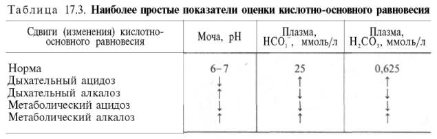
В клинической практике изолированные формы дыхательных или метаболических нарушений встречаются крайне редко. Уточнить характер этих нарушений и степень компенсации помогает определение комплекса показателей КОР. В последние десятилетия для изучения показателей КОР широко используются чувствительные электроды для прямого измерения рН и РCO2 крови. В клинических условиях удобно пользоваться приборами типа «Аструп» или отечественными аппаратами АЗИВ, АКОР. При помощи этих приборов и соответствующих номограмм можно определить следующие основные показатели КОР:
1) актуальный рН крови – отрицательный десятичный логарифм концентрации водородных ионов крови в физиологических условиях;
2) актуальное РCO2 цельной крови – парциальное давление углекислого газа (Н2СО3 + СО2) в крови в физиологических условиях;
3) актуальный бикарбонат (АВ) – концентрация бикарбоната в плазме крови в физиологических условиях;
4) стандартный бикарбонат плазмы крови (SB) – концентрация бикарбоната в плазме крови, уравновешенной альвеолярным воздухом и при полном насыщении кислородом;
5) буферные основания цельной крови или плазмы (ВВ) – показатель мощности всей буферной системы крови или плазмы;
6) нормальные буферные основания цельной крови (NBB) – буферные основания цельной крови при физиологических значениях рН и РCO2 альвеолярного воздуха;
7) излишек оснований ( B E ) – показатель избытка или недостатка буферных мощностей (BB–NBB).
ДЫХАТЕЛЬНАЯ ФУНКЦИЯ КРОВИ. Перенос кислорода кровью
Сущность дыхательной функции крови состоит в доставке кислорода от легких к тканям и углекислого газа от тканей к легким.
Кровь осуществляет дыхательную функцию прежде всего благодаря наличию в ней гемоглобина. Физиологическая функция гемоглобина как переносчика кислорода основана на способности обратимо связывать кислород. Поэтому в легочных капиллярах происходит насыщение крови кислородом, а в тканевых капиллярах, где парциальное давление кислорода резко снижено, осуществляется отдача кислорода тканям.
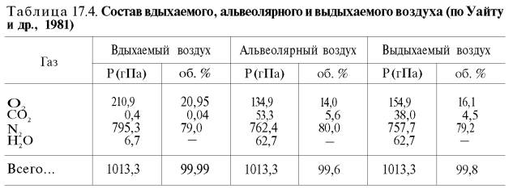
В состоянии покоя ткани и органы человека потребляют около 200 мл кислорода в минуту. При тяжелой физической работе количество потребляемого тканями кислорода возрастает в 10 раз и более (до 2–3 л/мин). Доставка от легких к тканям такого количества кислорода в виде газа, физически растворенного в плазме, невозможна вследствие малой растворимости кислорода в воде и плазме крови.
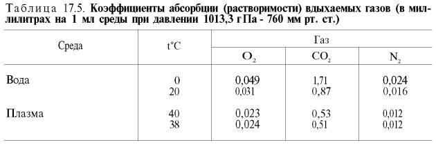
Исходя из приведенных в табл. 17.5 данных, а также зная РO2 в артериальной крови – 107–120 гПа (80–90 мм рт. ст.), нетрудно видеть, что количество физически растворенного кислорода в плазме крови не может превышать 0,3 об. %. При расчете кислородной емкости крови этой величиной можно пренебречь.
Итак, функцию переносчика кислорода в организме выполняет гемоглобин. Напомним, что молекула гемоглобина построена из 4 субъединиц (полипептидных цепей), каждая из которых связана с гемом (см. главу 2). Следовательно, молекула гемоглобина имеет 4 гема, к которым может присоединяться кислород, при этом гемоглобин переходит в оксигемо-глобин.
Гемоглобин человека содержит 0,335% железа. Каждый грамм-атом железа (55,84 г) в составе гемоглобина при полном насыщении кислородом связывает 1 грамм-молекулу кислорода (22400 мл). Таким образом, 100 г гемоглобина могут связывать
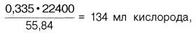
а каждый грамм гемоглобина – 1,34 мл кислорода. Содержание гемоглобина в крови здорового человека составляет 13–16%, т.е. в 100 мл крови 13–16 г гемоглобина. При РО2 в артериальной крови 107–120 гПа гемоглобин насыщен кислородом на 96%. Следовательно, в этих условиях 100 мл крови содержит 19–20 об. % кислорода:
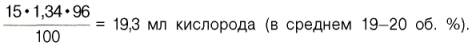
В венозной крови в состоянии покоя РО2 = 53,3 гПа, и в этих условиях гемоглобин насыщен кислородом лишь на 70–72%, т.е. содержание кислорода в 100 мл венозной крови не превышает:
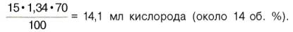
Артериовенозная разница по кислороду будет около 6 об. %. Таким образом, за 1 мин ткани в состоянии покоя получают 200–240 мл кислорода (при условии, что минутный объем сердца в покое составляет 4 л).
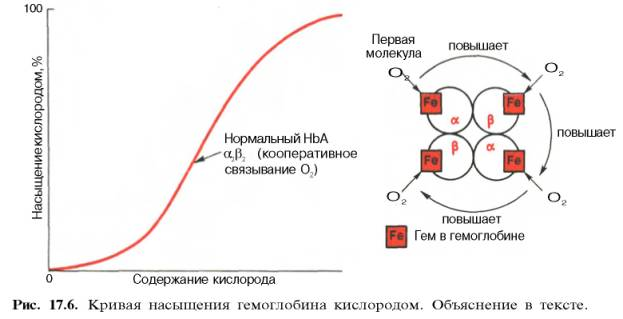
Возрастание интенсивности окислительных процессов в тканях, например при усиленной мышечной работе всегда связано с более полным извлечением кислорода из крови. Кроме того, при физической работе резко увеличивается скорость кровотока. Зависимость между степенью насыщения гемоглобина кислородом и РО2, можно выразить в виде кривой насыщения гемоглобина кислородом, или кривой диссоциации оксигемоглобина, которая имеет S-образную форму и характеризует сродство гемоглобина к кислороду (рис. 17.6).
Характерная для гемоглобина S-образная кривая насыщения кислородом свидетельствует, что связывание первой молекулы кислорода одним из гемов гемоглобина облегчает связывание последующих молекул кислорода тремя другими оставшимися гемами. Долгое время механизм, лежащий в основе этого эффекта, оставался загадкой, так как, по данным рентгено-структурного анализа, 4 гема в молекуле гемоглобина довольно далеко отстоят друг от друга и вряд ли могут оказывать взаимное влияние. В последнее время принято следующее объяснение происхождения S-образ-ной кривой. Считают, что тетрамерная молекула гемоглобина способна обратимо распадаться на две половинки, каждая из которых содержит одну α-цепь и одну β-цепь:
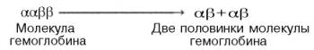
молекулы гемоглобина (допустим, к α-цепи этой половинки). Как только такое присоединение произойдет, α-полипептидная цепь претерпевает конформа-ционные изменения, которые передаются на тесно связанную с ней β-цепь; последняя также подвергается конформационным сдвигам. β-Цепь присоединяет кислород, имея уже большее сродство к нему. Таким путем связывание одной молекулы кислорода благоприятствует связыванию второй молекулы (так называемое кооперативное взаимодействие).
После насыщения кислородом одной половины молекулы гемоглобина возникает новое, внутреннее, напряженное состояние молекулы гемоглобина, которое вынуждает и вторую половину гемоглобина изменить конфор-мацию. Теперь еще две молекулы кислорода, по-видимому, по очереди связываются со второй половинкой молекулы гемоглобина, образуя оксигемоглобин.
S-образная форма кривой насыщения гемоглобина кислородом имеет большое физиологическое значение. При такой форме кривой обеспечивается возможность насыщения крови кислородом при изменении РО2 в довольно широких пределах. Например, дыхательная функция крови существенно не нарушается при снижении РО2 в альвеолярном воздухе со 133,3 до 80–93,3 гПа. Поэтому подъем на высоту до 3,0–3,5 км над уровнем моря не сопровождается развитием выраженной гипоксемии.
Численно сродство гемоглобина к кислороду принято выражать величиной Р50 – парциальное напряжение кислорода, при котором 50% гемоглобина связано с кислородом (рН 7,4 температура 37°С). Нормальная величина Р50 около 34,67 гПа (см. рис. 17.6). Смещение кривой насыщения гемоглобина кислородом вправо означает уменьшение способности гемоглобина связывать кислород и, следовательно, сопровождается повышением Р50. Напротив, смещение кривой влево свидетельствует о повышенном сродстве гемоглобина к кислороду, величина Р50 снижена.
Ход кривой насыщения гемоглобина кислородом или диссоциации оксигемоглобина зависит от ряда факторов. Сродство гемоглобина к кислороду в первую очередь связано с рН. Чем ниже рН, тем меньше способность гемоглобина связывать кислород и тем выше Р50. В тканевых капиллярах рН ниже (поступает большое количество СО2), в связи с чем гемоглобин легко отдает кислород. В легких СО2 выделяется, рН повышается и гемоглобин активно присоединяет кислород.
Способность гемоглобина связывать кислород зависит также от температуры. Чем выше температура (в тканях температура выше, чем в легких), тем меньше сродство гемоглобина к кислороду. Напротив, снижение температуры вызывает обратные явления.
Количество гемоглобина в крови, а также в какой-то мере его способность связывать кислород (характер кривой диссоциации оксигемоглобина) несколько меняются с возрастом. Например, у новорожденных содержание гемоглобина доходит до 20–21% (вместо обычных для взрослого 13–16%). У человека имеется несколько гемоглобинов, которые образуются в различном количестве в разные стадии онтогенеза и различаются по своему сродству к кислороду.
Рассмотрим нарушения дыхательной функции крови при некоторых патологических состояниях.
Различные формы гипоксии
Гипоксия (кислородное голодание) – состояние, возникающее при недостаточном снабжении тканей организма кислородом или нарушении его утилизации в процессе биологического окисления. Согласно классификации, предложенной И.Р. Петровым, гипоксии делятся на 2 группы:
1. Гипоксия вследствие понижения РО2 во вдыхаемом воздухе (экзогенная гипоксия).
2. Гипоксия при патологических процессах, нарушающих снабжение тканей кислородом при нормальном содержании его в окружающей среде. Сюда относятся следующие типы: а) дыхательный (легочный); б) сердечнососудистый (циркуляторный); в) кровяной (гемический); г) тканевый (гис-тотоксический); д) смешанный.
Гипоксия вследствие понижения парциального давления кислорода во вдыхаемом воздухе. Этот вид гипоксии возникает главным образом при подъеме на высоту. Может наблюдаться и в тех случаях, когда общее барометрическое давление нормальное, но РО2 понижено: например, при аварии в шахтах, неполадках в системе кислородообеспечения кабины летательного аппарата, в подводных лодках и т.п., а также во время операций при неисправности наркозной аппаратуры. При экзогенной гипоксии развивается гипоксемия, т.е. уменьшается РО2 в артериальной крови и снижается насыщение гемоглобина кислородом.
Гипоксия при патологических процессах, нарушающих снабжение или утилизацию кислорода тканями. Дыхательный (легочный) тип гипоксии возникает в связи с альвеолярной гипервентиляцией, что может быть обусловлено нарушением проходимости дыхательных путей (воспалительный процесс, инородные тела, спазм), уменьшением дыхательной поверхности легких (отек легкого, пневмония и т.д.). В подобных случаях снижаются РО2 в альвеолярном воздухе и напряжение кислорода в крови, в результате чего уменьшается насыщение гемоглобина кислородом. Обычно нарушается также выведение из организма углекислого газа, и к гипоксии присоединяется гиперкапния.
Сердечно-сосудистый (циркуляторный) тип гипоксии наблюдается при нарушениях кровообращения, приводящих к недостаточному кровообращению органов и тканей. Для газового состава крови в типичных случаях циркуляторной гипоксии характерны нормальные напряжение и содержание кислорода в артериальной крови, снижение этих показателей в венозной крови и высокая артериовенозная разница по кислороду.
Кровяной (гемический) тип гипоксии возникает в результате уменьшения кислородной емкости крови при анемиях, обусловленных значительным уменьшением эритроцитной массы или резким понижением содержания гемоглобина в эритроцитах. В этих случаях РО2 в венозной крови резко снижено.
Гемическая гипоксия наблюдается также при отравлении оксидом углерода (образование карбоксигемоглобина) и метгемоглобинообразователя-ми (метгемоглобинемия), а также при некоторых генетически обусловленных аномалиях гемоглобина. При образовании карбоксигемоглобина и метгемоглобина напряжение кислорода в венозной крови и тканях оказывается значительно пониженным, одновременно уменьшается артериовеноз-ная разница содержания кислорода.
Тканевый (гистотоксический) тип гипоксии обычно обусловлен нарушением способности тканей поглощать кислород из крови. Утилизация кислорода тканями может затрудняться в результате угнетения биологического окисления различными ингибиторами, нарушения синтеза ферментов или повреждения мембранных структур клетки. Типичным примером тканевой гипоксии может служить отравление цианидами. Попадая в организм, ионы CN–активно взаимодействуют с трехвалентным железом, тем самым блокируя конечный фермент дыхательной цепи – цитохромоксидазу, в результате чего подавляется потребление кислорода клетками. Иными словами, при гистотоксической гипоксии ткани не в состоянии извлекать кислород из тканевых капилляров даже при высоком РО2
Перенос углекислого газа кровью от тканей к легким
В организме человека, не выполняющего физической работы (состояние покоя), от тканей к легким каждую минуту переносится примерно 180 мл углекислого газа. Эту величину легко рассчитать. Если дыхательный коэффициент равен 0,85, то при поглощении тканями в покое 200 мл кислорода в минуту должно образовываться около 170 мл углекислого газа (200•0,85). На самом деле величина несколько больше, поскольку количество поглощаемого в покое кислорода колеблется от 200 до 240 мл в минуту.
В целом за сутки с вдыхаемым воздухом в организм человека поступает примерно 600 л кислорода и выделяется в окружающую среду 480 л углекислого газа (примерно 942,8 г), что соответствует 21,4 моль углекислого газа.
Организм располагает несколькими механизмами переноса СО2 от тканей к легким. Часть его переносится в физически растворенном виде. Растворимость СО2 в плазме крови в 40 раз превышает растворимость в ней кислорода, тем не менее при небольшой артериовенозной разнице РСО2 (напряжение СО2 в венозной крови, притекающей к легким по легочной артерии, равно 60 гПа, а в артериальной крови – 53,3 гПа) в физически растворенном виде может быть перенесено в покое 12–15 мл СО2, что составляет 6–7% от всего количества переносимого углекислого газа.
Некоторое количество СО2 может переноситься в виде карбаминовой формы. Оказалось, что СО2 может присоединяться к гемоглобину посредством карбаминовой связи, образуя карбгемоглобин, или карбаминогемо-глобин (впервые мысль о наличии углекислого газа, непосредственно связанного с гемоглобином, была высказана И.М. Сеченовым):
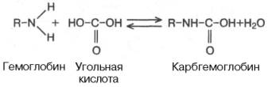
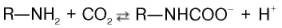
Карбгемоглобин – соединение очень нестойкое и чрезвычайно быстро диссоциирует в легочных капиллярах с отщеплением СО2.
Количество карбаминовой формы невелико: в артериальной крови оно составляет 3 об. %, в венозной – 3,8 об. % . В виде карбаминовой формы из ткани к легким переносится от 3 до 10% всего углекислого газа, поступающего из тканей в кровь. Основная масса СО2 транспортируется с кровью к легким в форме бикарбоната, при этом важнейшую роль играет гемоглобин эритроцитов.
Как отмечалось, кислотный характер оксигемоглобина выражен значительно сильнее, чем гемоглобина (константа диссоциации ННbО2 примерно в 20 раз больше константы диссоциации ННb). Важно также запомнить, что поступающий в ткани с кровью оксигемоглобин является более сильной кислотой, чем Н2СО3, и связан с катионом калия. Эту калийную соль оксигемоглобина можно обозначить как КНbО2 (рис. 17.7). В периферических капиллярах большого круга кровообращения гемоглобин эритроцитов отдает кислород тканям (КНbО2 —> О2 + KHb), его способность связывать ионы водорода увеличивается. Одновременно в эритроцит поступает продукт обмена – углекислый газ. Под влиянием фермента карбоангидразы углекислый газ взаимодействует с водой, при этом образуется угольная кислота. Возникающий за счет угольной кислоты избыток водородных ионов связывается с гемоглобином, отдавшим кислород, а накапливающиеся анионы НСО3 выходят из эритроцита в плазму :
В обмен на эти ионы в эритроцит поступают анионы хлора, для которых мембрана эритроцитов проницаема, в то время как натрий – другой составной элемент хлорида натрия, содержащегося в крови, остается в плазме. В итоге в плазме крови повышается содержание бикарбоната натрия NaHCO3.
Этот процесс способствует восстановлению щелочного резерва крови, т.е. бикарбонатная буферная система находится в довольно тесных функциональных связях с буферной системой эритроцитов.
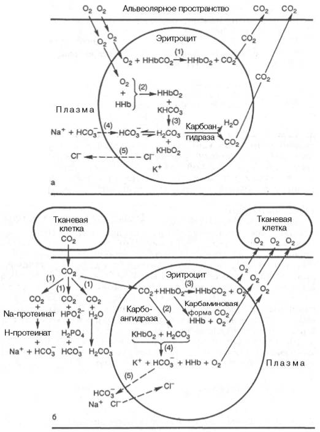
Роль системы плазма-эритроцит в дыхательной функции крови (по Г.Е. Владимирову, Н.С. Пантелеевой).
а - химические процессы в капиллярах легких; б - химические процессы в капиллярах ткани.
В легочных капиллярах, в эритроцитах, происходит процесс вытеснения угольной кислоты из бикарбоната калия оксигемоглобином: ННbO2 + К+ + НCO3–—> КНbO2 + Н2СO3.
Образующаяся угольная кислота быстро расщепляется при участии карбоангидразы на углекислый газ и воду. Низкое РCO2 в просвете альвеол способствует диффузии углекислого газа из эритроцитов в легкие.
По мере снижения в эритроцитах концентрации бикарбоната из плазмы крови в них поступают новые порции ионов НСО3–, а в плазму выходит эквивалентное количество ионов Сl–. Концентрация бикарбоната натрия в плазме крови в легочных капиллярах быстро падает, но одновременно в плазме повышается концентрация хлорида натрия, а в эритроцитах свободный гемоглобин превращается в калийную соль оксигемо-глобина.
Итак, в форме бикарбоната при участии гемоглобина эритроцитов транспортируется с кровью к легким более 80% от всего количества углекислого газа.
СИСТЕМА СВЕРТЫВАНИЯ КРОВИ
Способность крови свертываться с образованием сгустка в просвете кровеносных сосудов при их повреждении была известна с незапамятных времен. Создание первой научной теории свертывания крови в 1872 г. принадлежит А.А. Шмидту. Первоначально она сводилась к следующему: свертывание крови – ферментативный процесс; для свертывания крови необходимо присутствие трех веществ: фибриногена, фибринопластического вещества и тромбина.
В ходе реакции, катализируемой тромбином, первые два вещества, соединяясь между собой, образуют фибрин. Циркулирующая в сосудах кровь не свертывается по причине отсутствия в ней тромбина.
В результате дальнейших исследований А.А. Шмидта и его школы, а также Моравица, Гаммарстена, Спиро и др. было установлено, что образование фибрина происходит за счет одного предшественника – фибриногена.
Проферментом тромбина является протромбин, для процесса свертывания необходимы тромбокиназа тромбоцитов и ионы кальция.
Таким образом, через 20 лет после открытия тромбина была сформулирована классическая ферментативная теория свертывания крови, которая в литературе получила название теории Шмидта–Моравица.
Схематически теория Шмидта–Моравица может быть представлена в следующем виде:
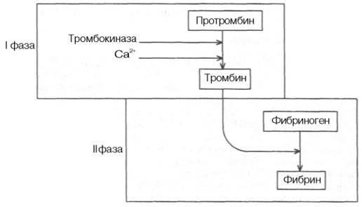
Протромбин переходит в активный фермент тромбин под влиянием тромбокиназы, содержащейся в тромбоцитах и освобождающейся из них при разрушении кровяных пластинок, и ионов кальция (I фаза). Затем под влиянием образовавшегося тромбина фибриноген превращается в фибрин (II фаза). Сравнительно простая по своей сути теория Шмидта–Моравица в дальнейшем необычайно усложнилась, обросла новыми сведениями, «превратив» свертывание крови в сложнейший ферментативный процесс.
Современные представления о свертывании крови
быстро прекращается, происходит гемостаз. Выделяют 4 фазы гемостаза.
Первая фаза – сокращение поврежденного сосуда.
Вторая фаза – образование в месте повреждения рыхлой тромбоци-тарной пробки, или белого тромба. Имеющийся в участке повреждения сосуда коллаген служит связующим центром для тромбоцитов. При агрегации тромбоцитов освобождаются вазоактивные амины, например серото-нин и адреналин, а также метаболиты простагландинов, например тром-боксан, которые стимулируют сужение сосудов.
Третья фаза – формирование красного тромба (кровяной сгусток).
Четвертая фаза – частичное или полное растворение сгустка.
Различают три типа тромбов, или сгустков. Белый тромб образуется из тромбоцитов и фибрина; в нем относительно мало эритроцитов. Формируется он в местах повреждения сосуда в условиях высокой скорости кровотока (в артериях). Второй вид тромбов – диссеминированные отложения фибрина в очень мелких сосудах (в капиллярах). Третий вид тромбов – красный тромб. Он состоит из эритроцитов и фибрина. Морфология красного тромба сходна с морфологией сгустков, образующихся в пробирке. Красные тромбы формируются in vivo в областях замедленного кровотока при отсутствии патологических изменений в стенке сосуда или на измененной стенке сосуда вслед за инициирующей тромбоцитарной пробкой.
Установлено, что в процессе свертывания крови участвуют компоненты плазмы, тромбоцитов и ткани, которые называются факторами свертывания крови. Факторы свертывания, связанные с тромбоцитами, принято обозначать арабскими цифрами (1, 2, 3 и т.д.), а факторы свертывания, находящиеся в плазме крови,– римскими цифрами (I, II, III и т.д.).
Факторы плазмы крови
Фактор I (фибриноген) – важнейший компонент свертывающей системы крови, так как биологической сущностью процесса свертывания крови является образование фибрина из фибриногена. Фибриноген состоит из 3 пар неидентичных полипептидных цепей, которые связаны между собой дисульфидными связями. Каждая цепь имеет олигосахаридную группу. Соединение между белковой частью и углеводными компонентами осуществляется посредством связи остатка аспарагина с N-ацетилглюкозамином. Общая длина молекулы фибриногена 46 нм, мол. масса 330000–340000. Синтезируется данный белок в печени, концентрация его в плазме крови человека составляет 8,2–12,9 мкмоль/л.
Фактор II (протромбин) является одним из основных белков плазмы крови, определяющих свертывание крови. При гидролитическом расщеплении протромбина образуется активный фермент свертывания крови – тромбин . Концентрация протромбина в плазме крови 1,4–2,1 мкмоль/л. Он является гликопротеином, который содержит 11–14% углеводов, включая гексозы, гексозамины и нейраминовую кислоту. По электрофоретической подвижности протромбин относится к α2-глобулинам, имеет мол. массу 68000–70000. Размеры большой и малой осей его молекулы соответственно 11,9 и 3,4 нм. Изоэлектрическая точка очищенного протромбина лежит в пределах рН от 4,2 до 4,4. Синтезируется данный белок в печени, в его синтезе принимает участие витамин К. Одна из специфических особенностей молекулы протромбина – способность связывать 10–12 ионов Са2+, при этом наступают конформационные изменения молекулы белка.
Превращение протромбина в тромбин связано с резким изменением молекулярной массы белка (с 70000 до 35000). Есть основания считать, что тромбин является большим фрагментом молекулы протромбина.
Фактор III (тканевый фактор, или тканевый тромбопластин) образуется при повреждении тканей. Это комплексное соединение липопротеиновой природы, отличается очень высокой мол. массой – до 167000000.
Фактор IV (ионы Са2+). Известно, что удаление из крови ионов Са2+ (осаждение оксалатом или фторидом натрия), а также перевод ионов Са2+ в неионизированное состояние (с помощью цитрата натрия) предупреждает свертывание крови. Следует также помнить, что нормальная скорость свертывания крови обеспечивается лишь оптимальными концентрациями ионов Са2+. Для свертывания крови человека, декальцинированной с помощью ионообменников, оптимальная концентрация ионов Са2+ определена в 1,0–1,2 ммоль/л. Концентрация ионов Са2+ выше и ниже оптимальной обусловливает замедление процесса свертывания. Ионы Са2+ играют важную роль почти на всех фазах (стадиях) свертывания крови: они необходимы для образования активного фактора X и активного тромбопластина тканей, принимают участие в активации проконвертина, образовании тромбина, лабилизации мембран тромбоцитов и в других процессах.
Фактор V (проакцелерин) относится к глобулиновой фракции плазмы крови. Он является предшественником акцелерина (активного фактора). Фактор V синтезируется в печени, поэтому при поражении этого органа может возникнуть недостаточность проакцелерина. Кроме того, существует врожденная недостаточность в крови фактора V, которая носит название парагемофилии и представляет собой одну из разновидностей геморрагических диатезов.
Фактор VII (антифибринолизин, проконвертин) – предшественник кон-вертина. Механизм образования активного конвертина из проконвертина изучен мало. Биологическая роль фактора VII сводится прежде всего к участию во внешнем пути свертывания крови.
Синтезируется фактор VII в печени при участии витамина К. Снижение концентрации проконвертина в крови наблюдается на более ранних стадиях заболевания печени, чем снижение уровня протромбина и проакцелерина.
Фактор VIII (антигемофильный глобулин А) является необходимым компонентом крови для формирования активного фактора X. Он очень лабилен. При хранении цитратной плазмы его активность снижается на 50% за 12 ч при температуре 37°С. Врожденный недостаток фактора VIII
является причиной тяжелого заболевания – гемофилии А – наиболее частой формы коагулопатии.
Фактор IX (антигемофильный глобулин В, Кристмас-фактор) принимает участие в образовании активного фактора X. Геморрагический диатез, вызванный недостаточностью фактора IX в крови, называют гемофилией В. Обычно при дефиците фактора IX геморрагические нарушения носят менее выраженный характер, чем при недостаточности фактора VIII.
Фактор X (фактор Стюарта–Прауэра) назван по фамилиям больных, у которых был впервые обнаружен его недостаток. Он относится к α-глобу-линам, имеет мол. массу 87000. Фактор X участвует в образовании тромбина из протромбина. У пациентов с недостатком фактора X увеличено время свертывания крови, нарушена утилизация протромбина. Клинически недостаточность фактора X выражается в кровотечениях, особенно после хирургических вмешательств или травм. Фактор X синтезируется клетками печени; его синтез зависит от содержания витамина К в организме.
Фактор XI (фактор Розенталя) – антигемофильный фактор белковой природы. Недостаточность этого фактора при гемофилии С была открыта в 1953 г. Розенталем. Фактор XI называют также плазменным предшественников тромбопластина.
Фактор XII (фактор Хагемана) участвует в пусковом механизме свертывания крови. Он также стимулирует фибринолитическую активность, кини-новую систему и некоторые другие защитные реакции организма. Активация фактора XII происходит прежде всего в результате взаимодействия его с различными «чужеродными» поверхностями: кожей, стеклом, металлом и др. Врожденный недостаток данного белка вызывает заболевание, которое назвали болезнью Хагемана по фамилии первого обследованного больного, страдавшего этой формой нарушения свертывающей функции крови: увеличенное время свертывания крови при отсутствии геморрагии.
Фактор XIII (фибринстабилизирующий фактор) является белком плазмы крови, который стабилизирует образовавшийся фибрин, т.е. участвует в образовании прочных межмолекулярных связей в фибрин-полимере. Мол. масса 330000–350000. Белок состоит из трех полипептидных цепей, каждая из которых имеет мол. массу 110000.
Факторы тромбоцитов
Кроме факторов плазмы крови и тканей, в процессе свертывания крови принимают участие факторы, связанные с тромбоцитами. В настоящее время известно около 10 отдельных факторов тромбоцитов. Приводим некоторые из них.
Фактор 1 тромбоцитов представляет собой адсорбированный на поверхности тромбоцитов проакцелерин; с тромбоцитами связано около 5% всего проакцелерина крови.
Фактор 3 – один из важнейших компонентов свертывающей системы крови. Вместе с рядом факторов плазмы он необходим для образования тромбина из протромбина.
Фактор 4 является антигепариновым фактором, тормозит антитромбо-пластиновое и антитромбиновое действие гепарина. Кроме того, фактор 4 принимает активное участие в механизме агрегации тромбоцитов.
Фактор 8 (тромбостенин) участвует в процессе ретракции фибрина, очень лабилен, обладает АТФазной активностью. Освобождается при склеивании и разрушении тромбоцитов в результате изменения физико-химических свойств поверхностных мембран.
«Внешний» и «внутренний» пути свертывания крови
Свертывание крови может осуществляться с помощью двух механизмов, тесно связанных между собой,– так называемых внешнего и внутреннего путей свертывания (рис. 17.8).
Инициация образования сгустка в ответ на повреждение ткани осуществляется по «внешнему» пути свертывания, а формирования красного тромба в области замедленного кровотока или на аномальной сосудистой стенке при отсутствии повреждения ткани – по «внутреннему» пути свертывания. На этапе активации фактора X происходит как бы объединение обоих путей и образуется конечный путь свертывания крови.
На каждом из путей последовательно образующиеся ферменты активируют соответствующие зимогены, что приводит к превращению растворимого белка плазмы фибриногена в нерастворимый белок фибрин, который и образует сгусток. Это превращение катализируется протеолитическим ферментом тромбином. В нормальных условиях тромбина в крови нет, он образуется из своего активного зимогена – белка плазмы протромбина. Этот процесс осуществляется протеолитическим ферментом, названным фактором Ха, который также в обычных условиях отсутствует в крови; он образуется при кровопотере из своего зимогена (фактора X). Фактор Ха превращает протромбин в тромбин только в присутствии ионов Са2+ и других факторов свертывания.
Таким образом, свертывание крови включает эффективно регулируемую серию превращений неактивных зимогенов в активные ферменты, что в итоге приводит к образованию тромбина и превращению фибриногена в фибрин. Заметим, что «внутренний» путь свертывания крови – медленный процесс, поскольку в нем участвует большое число факторов свертывания:
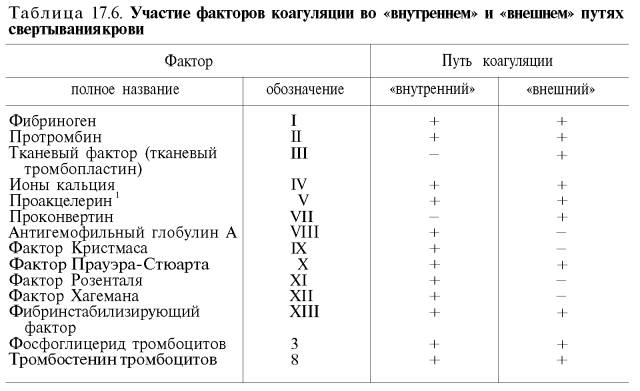
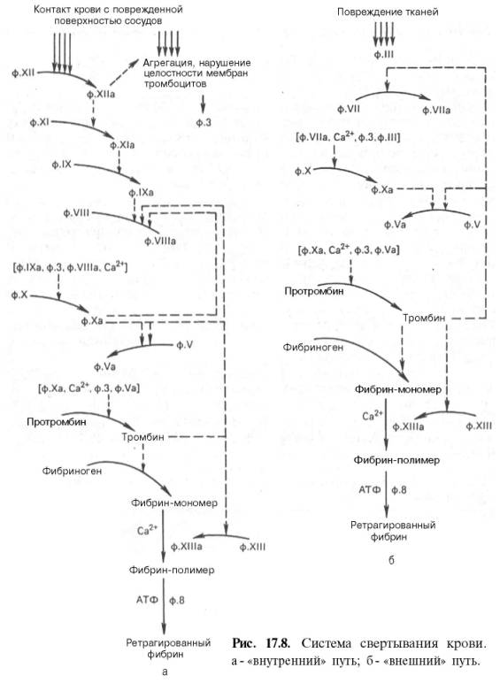
Принято считать, что фактор III, переходящий в плазму крови при повреждении тканей, а также, по-видимому, фактор 3 тромбоцитов создают предпосылки для образования минимального (затравочного) количества тромбина (из протромбина). Этого минимального количества тромбина недостаточно для быстрого превращения фибриногена в фибрин и, следовательно, для свертывания крови. В то же время следы образовавшегося тромбина катализируют превращение проакцелерина и проконвертина в ак-целерин (фактор Va) и соответственно в конвертин (фактор VIIa).
В результате сложного взаимодействия перечисленных факторов, а также ионов Са2+ происходит образование активного фактора X (фактор Ха).
Затем под влиянием комплекса факторов: Ха, Va, 3 и ионов Са2+ (фактор VI) – происходит образование тромбина из протромбина.
Далее под влиянием фермента тромбина от фибриногена отщепляются 2 пептида А и 2 пептида В (мол. масса пептида А – 2000, а пептида В – 2400). Установлено, что тромбин разрывает пептидную связь аргинин–лизин.
После отщепления пептидов, получивших название «фибрин-пептиды», фибриноген превращается в хорошо растворимый в плазме крови фибрин-мономер, который затем быстро полимеризуется в нерастворимый фибрин-полимер. Превращение фибрин-мономера в фибрин-полимер протекает с участием фибринстабилизирующего фактора – фактора XIII в присутствии ионов Са2+.
Известно, что вслед за образованием нитей фибрина происходит их сокращение. Имеющиеся в настоящее время данные свидетельствуют, что ретракция кровяного сгустка является процессом, требующим энергии АТФ. Необходим также фактор 8 тромбоцитов (тромбостенин). Последний по своим свойствам напоминает актомиозин мышц и обладает АТФазной активностью. Таковы основные стадии свертывания крови.
ПРОТИВОСВЕРТЫВАЮЩАЯ СИСТЕМА КРОВИ
Кровь в живом организме находится в жидком состоянии, несмотря на наличие очень мощной свертывающей системы. Многочисленные исследования, направленные на выяснение причин и механизмов поддержания крови в жидком состоянии во время циркуляции ее в кровяном русле, позволили в значительной степени выяснить природу противосвертывающей системы крови. Оказалось, что в образовании ее, так же как и в формировании системы свертывания крови, участвует ряд факторов плазмы крови, тромбоцитов и тканей. К ним относят различные антикоагулянты: анти-тромбопластины, антитромбины, а также фибринолитическую систему крови. Считается, что в организме существуют специфические ингибиторы для каждого фактора свертывания крови (антиакцелерин, антиконвертин и др.). Снижение активности этих ингибиторов повышает свертываемость крови и способствует образованию тромбов. Повышение активности ингибиторов, наоборот, затрудняет свертывание крови и может сопровождаться развитием геморрагии. Сочетание явлений рассеянного тромбоза и геморрагии может быть обусловлено нарушением регуляторных взаимоотношений свертывающей и противосвертывающей систем.
В кровеносных сосудах имеются хеморецепторы, способные реагировать на появление в крови активного тромбина. Хеморецепторы связаны с ней-рогуморальным механизмом, регулирующим образование антикоагулянтов. Таким образом, если тромбин появляется в циркулирующей крови в условиях нормального нейрогуморального контроля, то в этом случае он не только не вызывает свертывания крови, но, напротив, рефлекторно стимулирует образование антикоагулянтов и тем самым выключает свертывающий механизм.
Наиболее быстро действующими компонентами противосвертывающей системы являются антитромбины. Они относятся к так называемым прямым антикоагулянтам, так как находятся в активной форме, а не в виде предшественников. Предполагают, что в плазме крови существует около шести различных антитромбинов. Наибольшая антитромбиновая активность присуща антитромбину III; он сильно активируется в присутствии гепарина, обладающего большим отрицательным зарядом. Гепарин способен связываться со специфическим катионным участком антитромбина III, вызывая конформационные изменения его молекулы. В результате этого изменения антитромбин III приобретает возможность связываться со всеми сериновыми протеазами (большинство факторов свертывания крови представляют собой сериновые протеазы). В системе свертывания крови антитромбин III ингибирует активность тромбина, факторов IXa, Xa, XIa и ХIIа. Известно, что небольшое количество гепарина находится на стенках сосудов, вследствие этого снижается активация «внутреннего» пути свертывания крови. У лиц с наследственной недостаточностью антитромбина III наблюдается склонность к образованию тромбов.
Гепарин часто используется в качестве препарата, предотвращающего свертывание крови. Действие гепарина в случае его передозировки можно устранить связыванием его рядом веществ – антагонистов гепарина. К ним относится прежде всего протамин (протамина сульфат). Протамин – сильно катионный полипептид, конкурирует с катионными участками антитромбина III за связывание с полианионным гепарином.
Не менее важно применение так называемых искусственных антикоагулянтов. Например, витамин К стимулирует синтез в печени протромбина, проакцелерина, проконвертина, фактора X; для снижения активности свертывающей системы крови назначают антикоагулянты типа антивитаминов К. Это прежде всего дикумарин, неодикумарин, пелентан, синкумар и др. Антивитамины К тормозят в клетках печени синтез перечисленных ранее факторов свертывания крови. Этот способ воздействия дает эффект не сразу; а спустя несколько часов или даже дней.
Фибринолиз
В организме существует мощная фибринолитическая система, обеспечивающая возможность растворения (фибринолиз) сформировавшихся кровяных сгустков – тромбов (рис. 17.9).
Ретрагированный сгусток фибрина в организме человека и животных под влиянием протеолитического фермента плазмы крови – плазмина подвергается постепенному рассасыванию с образованием ряда растворимых в воде продуктов гидролиза – пептидов. В норме плазмин находится в крови в форме неактивного предшественника – плазминогена. Превращение плазминогена в плазмин сопровождается отщеплением от полипептидной цепи 25% аминокислотных остатков. Катализируется эта реакция как активаторами крови, так и активаторами тканей . Ведущая роль в этом процессе принадлежит кровяным активаторам. В норме активность кровяных активаторов плазминогена очень низкая, т.е. они находятся в основном в форме проактиваторов. Весьма быстрое превращение кровяного проактиватора в активатор плазминогена происходит под влиянием тканевых лизокиназ, а также стрептокиназы. Стрептокиназа вырабатывается гемолитическим стрептококком и в обычных условиях в крови отсутствует. Однако при стрептококковой инфекции возможно образование стрептокиназы в большом количестве, что иногда приводит к усиленному фибринолизу и развитию геморрагического диатеза.
Необходимо также иметь в виду, что наряду с фибринолитической системой крови человека имеется и система антифибринолитическая. Она состоит из различных антикиназ, антиплазмина и других антиактиваторов.
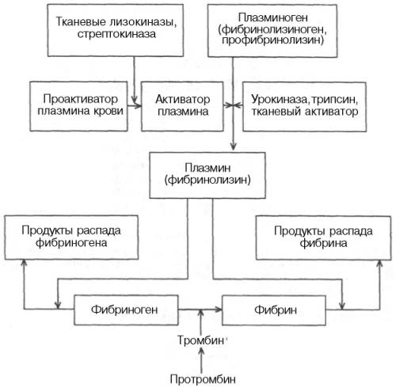
Схема фибринолиза.
В практической медицине в лечебных целях ферментные препараты и их ингибиторы широко используются при нарушении свертывающей и проти-восвертывающей систем крови. Так, при тромбоэмболической болезни применяют ферменты, способствующие либо лизису образовавшегося тромба, либо снижению повышенной свертываемости крови. При состояниях, сопровождающихся развитием фибринолиза, используются ингибиторы ферментов.
Исследования последних лет дают основание считать, что введение плазмина в сочетании с гепарином (антитромбином) может быть эффективным не только при лечении тромбоза легочной артерии, тромбофлебитов, но и при лечении инфаркта миокарда, если вводить эти препараты в первые часы после начала болезни. В качестве фибринолитических препаратов при инфаркте миокарда можно использовать также активаторы плазминогена – урокиназу и стрептокиназу.
Новое перспективное направление – использование иммобилизованных ферментов (стрептодеказа и др.). Такие формы ферментов полностью сохраняют каталитическую активность, действие их в организме более длительно, а антигенность снижена.
Следует помнить, что терапия тромболитическими препаратами требует хорошо организованного лабораторного контроля, так как протеолитиче-ское действие плазмина не является строго специфическим только для фибрина – основного компонента тромба: введение плазмина может вызвать нежелательное расщепление многих важных для свертывания крови веществ, что в свою очередь может привести к серьезным осложнениям, в частности к развитию геморрагического диатеза.

Источник: xumuk.ru
(c) Регент
[Наверх]